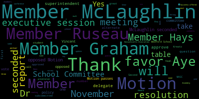
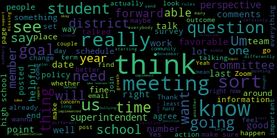
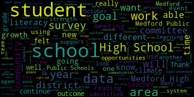
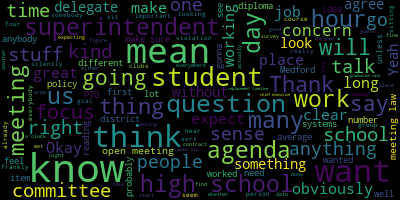
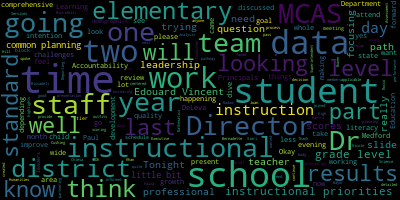

[Lungo-Koehn]: believe we have any student reps on yet because it's early but we'll check in when we come back from executive session so number three upon a motion to enter into executive session pursuant to mass general law 30 a section 21 a executive session the medford school Committee will convene to discuss collective bargaining with the MTA regarding a grievance dated August 28th, 2023. And the Chair so declares, the Medford School Committee will convene in public session immediately following the conclusion of the executive session expected to be on or about 6 p.m. Is there a motion to enter executive session? By Member McLaughlin, seconded by Member Graham. I'll take a roll call vote to head into executive session. Member Hays? Yes. Member Kreatz? Yes. Member Graham?
[Graham]: Yes. Member Bistow? Yes.
[Lungo-Koehn]: And myself? Yes. Motion to enter executive session? Yes. Yes, by Member Ruseau. That's seven in the affirmative, zero in the negative. We will enter executive session. Please mark Member Ruseau present.
[U1EIl_L-LWc_SPEAKER_00]: Thank you. Good evening.
[Lungo-Koehn]: We are currently on page two after executive session, which is the first item is our consent agenda, bills and payrolls, regular school committee meeting minutes from October 2nd, 2023. Is there a motion on the floor?
[Announcer]: Motion to approve.
[Lungo-Koehn]: A motion to approve by member Ruseau, seconded by member Hays. All those in favor? Aye. All opposed? Consent agenda is approved. We do not have any reports of subcommittee so go right into number six report of reports of superintendent. The first report is our superintendents updates and comments so I'm going to turn it over to you, Dr. reset what Vincent.
[Edouard-Vincent]: I would like to begin this evening with a reflection on the challenging week that so many in our community have experienced with the outbreak of war in Israel. As this conflict continues to escalate, we should take some time to think about how the news from Israel and Palestine might affect our students. More and more of the devastation and violence is being shown on social media, from news outlets to individual accounts. Content moderators on many platforms are overwhelmed and ill-equipped, meaning that all social media users are likely to encounter graphic or misleading content. We strongly, strongly encourage our caregivers of our younger students to closely monitor any online activity to ensure that children are not being exposed to inappropriate content. We also agree with advice from experts that older children with access to the internet should be encouraged to be skeptical of videos shared on social media and offered help with evaluating the news sources that they are using. We are here for all of our community, especially those with loved ones and friends facing the atrocities of this war firsthand. We strongly condemn the terror attacks perpetuated by Hamas. Moreover, we join our community in grief for the lives broken and lost in this last week. Amid these upsetting events, I am reminded of how fortunate and privileged we are to live in a safe and loving community here in Medford. I hope we can all stand together to support our neighbors and community members in this difficult moment.
[U1EIl_L-LWc_SPEAKER_00]: I'd like to transition and share some news, important news from the district.
[Edouard-Vincent]: Medford High School will be hosting an open house for our eighth graders. Grade eight students and their families are invited to attend the Medford High School open house on Thursday, October 26th from 6 p.m. to 8 p.m. at the high school. Students can meet the principals, administrators, teachers, and current students and ask them questions about their experiences at Medford High School. There will also be opportunities to visit and tour vocational shops, learn about athletics and extracurricular programs, and enter to win giveaways. Medford High School is excited to welcome the class of 2028. Also for the community to know that there are free English classes for caregivers of English learner students. In collaboration with the Welcome Project and the Medford Public Library, Medford Public Schools is hosting free English classes for Medford families starting tomorrow, October 17th. Please visit our website, mps02155.org, to register for classes or obtain more information. All information is available in English, Spanish, Portuguese, or Haitian Creole. Classes will be held in person and virtually. More good news in the area of athletics. Our boys and girls cross country bested Chelsea in home meets last week. Girls' and boys' varsity and junior varsity soccer teams notched wins last Thursday against Malden, with girls' varsity continuing a strong winning streak. Mr. Rocco's here, Sieri, coach. The middle school baseball and softball teams both bested Somerville in games on Tuesday. After Mustang football's 20-0 victory over Somerville on October 5th, the Boston Globe High School sports section recognized two students from Medford Public Schools, our defensive end, Sam Nazair, and running back, Stephens Exeter, as players of the week. Congratulations to these two senior student athletes and the entire team on a terrific showing. Also, Medford High School Unified Basketball had a big win over Everett on Wednesday. Great work and congratulations to all of our unified athletes. A few key important dates I just wanna share with the committee and the community. Wednesday, October 18th is our early release day for all students. Again, middle schools will be released at 11.30 a.m. and all other schools, it's a 12 noon dismissal this Wednesday. On Thursday again, October 26th is the grade eight open house for all rising ninth graders. in Medford Public Schools and those that are in private or charter schools, they are all welcome. Other events are included weekly in my Friday memo, so please make sure to pay attention and read that as well. So I just want to foreshadow what is to happen this evening during tonight's meeting. I'm looking forward to picking up where we left off at our last meeting with an update on the implementation status of the committee's goals for the current school year and a proposal for my own superintendent's goals. The Medford School Committee has a uniquely prominent role in long-term planning, goal setting, and visioning for the district. And I look forward to working with the members to develop superintendent goals, which harmonize with and complement our districts ambitions and priorities. I'll also provide a presentation on the results of the Medford High School climate and culture survey conducted last spring. As I will discuss in my presentation, the survey represents a snapshot in time, which I hope we can utilize as a benchmark and a point of comparison against future student-oriented surveys and feedback. I want to say thank you to the members for recommending changes to the presentation of the data in the full report to improve clarity. I hope that the updates we have made will make this data more useful to the committee and the community. With that, I would like to turn things over to Dr. Cushing, who will be providing an update on the formation of the Student Advisory Council at Medford High School. Thank you.
[B_or_Ix1ooU_SPEAKER_10]: Good evening Madam Mayor and members of the School Committee. Thank you for this opportunity to present three of our members. Yamile Atyen was not able to make it tonight as previously confirmed but I wanna take a moment that working with the high school leadership, we've worked to put out the information on the Medford Student Advisory Council, which will then serve to make sure that there are student members at every single school committee, regular school committee meeting moving forward, beginning with our November meetings. The students that the high school leadership has worked diligently to identify are Gowri Akazi, Mandy Chow, Maria, I apologize, my eyes are not focusing right now. Maria Zazara, Sophie Hook, Quinn McLean, Jayden Ville, Noah Urasco, Oprah Nicarra, Darren Truong, Yamile Etienne, Tenzin Ladan, Sierra Isbell, and Jao Paznante. And in the audience tonight, we do have also Eleanor Nicarra, joining her sister on the team with Oprah and also Darren. I do want to say that we have been meeting with students monthly since this was first asked back in the spring of 2021. As this group requested last year through a resolution, To propose dates I've proposed dates during the day for meetings with this group of students that do not conflict with other opportunities that are half days or other things along those lines. I defer to this body to establish your meeting dates, but that was something that was mentioned. I do also make a couple of policy recommendations there to make sure that we have multiple representatives at school committee. Oftentimes, it may be taxing on students, as was definitely the case last year when taking care of siblings. working jobs, sports, dance, and fill in the other thing, any other thing that I think the high school students, I will say, high school students, in my experience, are the busiest people around and wanna make sure that we're providing them a great opportunity. So, there you are, thank you. And also our three members who are here tonight.
[Lungo-Koehn]: Welcome, do you wanna come up and say your name? Yeah, give us your name, say hello.
[yrx76KKBXT8_SPEAKER_13]: If you'd like to say your name, great. Yeah, that'd be great. Any activities you're in.
[SPEAKER_08]: Hi, my name's Oprah Nakera. I'm a senior right now, and I do swimming, tennis, and I like to do a lot of community service at the high school. So I'm really excited to also participate in the Student Advisory Council. Great, thank you for joining. Thank you. Hi, my name is Eleanor Nakera. I'm really excited to be one of the representatives for the Students Advisory Council, and I also do swim and tennis, and I'm a senior as well. And I also love community service, and I'm part of the CCSR at the high school. Welcome.
[SPEAKER_01]: Hi, my name is Darren Truong. I'm happy to be on the Student Advisory Committee, and some of the clubs I'm involved with is I'm also involved with the student government. I'm also the senior class resident, and I'm also involved in other clubs such as Mata Yuan and Ethics School.
[Lungo-Koehn]: Thank you. Thank you for joining us. Member McLaughlin.
[McLaughlin]: Thank you. Thank you, Dr. Christian for this. And I just wanted to ask for the meetings, the November 5th, January 17th, the 20th and the 22nd. Are you going to have a hybrid model for those? I'm sorry, can we do hybrid on those?
[B_or_Ix1ooU_SPEAKER_10]: I don't see any reason why not. We that's our current model. Yeah, so happy to.
[McLaughlin]: And will there be an agenda in advance? Absolutely. Yes. Okay. Thank you.
[Hays]: Member Hays. Thank you. It's really exciting to see so many students want to be involved in this. And I think that's that's wonderful both for for us to get input from the students, but you know, for them to get the experience of being involved more directly with democracy. So my question really, I have is, you know, there really is a very specific policy and law. And I'm wondering how this is going to be hopefully shaped a little bit to more closely fit that. The 13 students is, again, it's wonderful. I don't know if you're thinking of having a combination of, you know, the policy calls for five students, and I think My assumption is that's an attempt to make it less unwieldy if you have a lot of students trying to meet with school committee, so that they can have a more direct involvement. And I'm wondering if there's a way, or if you're considering a way of trying to, for those meetings, maybe have a subset of students attend?
[B_or_Ix1ooU_SPEAKER_10]: We could definitely consider that. I'll be honest, throughout this work, I've always tried to expand the voice of students. And when I read that law, similar to the school site council law, it's wide latitude for interpretation. And I interpreted that after consulting other members of this board previously to that, to really be a minimum, like for five to be a minimum number and that to really try to expand the opportunities for student voice. High school students, especially, I will also say the law says nothing. It is completely silent on middle school students. And I know for a fact that middle school students have really great ideas and a lot to share. And so we've expanded it down to the middle school as well. While those are not required to be part of school committee meetings, I would invite any group, less than four, I think it is, to come and join us at any point to be able to listen and converse and meet with those middle school students because some of the stuff that they've offered has been really tremendous and enlightening over the years. So we've interpreted that, or I should say I, in this role, have really interpreted it as more of a minimum than an absolute of five.
[Hays]: So I guess I would just say, I mean, we had, I think we had a similar discussion about this already, because I know you have these preexisting student advisory councils, and actually it's pretty specific in saying five students in terms of the law and the policy. And it's not that I'm stuck on the five students, but I do think that there's a reason for that. And I believe that most likely the reason Again, it's to give students a more direct, if you've got 13 students trying to meet with us, the opportunities for each student to really be involved are going to be less than if you have a smaller number of students directly involved in those meetings. And so I'd love to see if there's a way you can maybe try to give each student obviously a chance to do that, but maybe have a smaller meetings that there is more opportunity for them to really be directly involved in having a conversation with school committee, whoever's able, I think we'll need to look at, again, coordinating those meetings to figure out if there's gonna be a subset of us who can make it to those meetings or whether it's a whole committee, which would be obviously the ideal. But I'm glad to see this is getting started and I really appreciate the work you've put into this. And again, it's exciting to see that there's so many students who really wanna be involved.
[B_or_Ix1ooU_SPEAKER_10]: I appreciate that. Perhaps we look at elections within the group of students or something along those lines, but I just wanna make sure that when I've looked at other communities too, they've expanded far beyond just 13, and we're hoping to build that over time. And to find a way so that it's not unwieldy, I'm definitely committed to that, but I am also just throughout my time as assistant principal and now, the greatest change has come from the voice of the students. And the greatest push oftentimes comes from when you have students on your side advocating that we can really help to move their progress and move a district's progress forward.
[Hays]: Absolutely. And I think that was the reason why the state put this in place for us to make sure that school districts are doing that and really getting the voice of the students involved. So look forward to getting this going. Thank you. Thank you.
[Lungo-Koehn]: Member Graham?
[Graham]: Just a couple of questions. Is there a time of day that you are targeting for these meetings? So we'll be meeting monthly with the students after school. But these dates that are on our.
[B_or_Ix1ooU_SPEAKER_10]: I leave that up to the committee. I'm not suggesting. These were the dates that fit based on the conversation last June. I went through and these are the dates that fit every other month within. So I would defer to the committee as to what time works best.
[Graham]: Is there a time of day that would work best for students? I mean, I think just practically speaking, if it's going to be inside the school day, there's going to be some finagling on our end to get there. So if we could be least disruptive to students, given that we have to do that to our schedules anyway, I think I would be fine with that. I don't know if there's a good time or a bad time. Yeah, I don't know enough about the high school schedule to know is there some magical space where it's not pulling them out of classes or what have you.
[B_or_Ix1ooU_SPEAKER_10]: Would you prefer immediately after school at 2.30 or would you prefer during the school day? After school, okay. So my suggestion would then be 2.30 to make sure that we're able to- Aren't these all on Wednesdays?
[North]: Is that early release? Yes.
[B_or_Ix1ooU_SPEAKER_10]: No, they're not early release days. I avoided those. Having tried to have the meetings on early release days, thinking that would be, no, it didn't really work. So, you've visited a few of these meetings. So, which was great.
[Graham]: So, in terms of the dates proposed, I am fine with all those dates except for the January date. That's not a date that I will be able to be there at but all the rest are fine for me and I think we just need to make sure that we post the meeting and they if other members of the community want to join us, they know how to do that. But so, if the committee wants to keep that January 17th date, I I'm totally fine with that. I just I definitely know that I can't be there and I also know that there will be at least three new members of the committee. So, I don't wanna make promises on behalf of people who can't tell us about their schedule. So, that's my other sort of concern. I don't know how we work decide on what the dates are because otherwise, you know, it's going to be really hard to manage the execution of that.
[Edouard-Vincent]: Based on the students requesting immediately after school, I can work with Ms. Malone to send out calendar holds for like a 2.30 to 3.30 block of time, maybe a one hour block and then everyone will get it if that's helpful.
[Lungo-Koehn]: Member Rizzo.
[Ruseau]: Thank you. I just also want to remind us from a security perspective that the high school must be unlocked and open for these meetings. These are public meetings, just like these. We can't have locked doors, so we'll have to plan the security around that, unless we don't have a quorum of members, in which case it's just a meeting. So that's important to remember. When posting the agenda, if more than three of us show up, none of us are speaking about anything related to policy, unless it's already on the agenda. So I just, my biggest concern about these meetings, which I obviously want to hear from the students, is I don't want each of these meetings to be a series of open meeting law violations, because nobody really wants to deal with those. So somebody will have to plan the effort around making our high school open at 230 when there's clubs and all the other stuff. Because I assume we're going to have them there, it doesn't make sense to cart the students over here, that doesn't make any sense. So I just want to make sure those logistics are worked out, rather than on the 17th or the 15th of November, when we sit down and we have a quorum. And then there's a locked door because that's just not gonna be acceptable. It's also against, it's a violation, so.
[Edouard-Vincent]: I'm willing to reach out to MASC and if we need to post it as a, I don't know, special meeting, student advisory special meeting to be held at the high school, maybe we can use the library or a larger open space.
[Ruseau]: Sorry, I mean, if we're speaking at all, then if there's four of us, then it is a meeting. an official meeting that will have an agenda posted following open meeting law. If we all swear to sit silently and listen or nod and be jovial and not engage in a single item of a policy for which we have authority, then I don't think that's a meeting, that's just four or more of us happen to be in the same place.
[McLaughlin]: What's point of information? That's unless it's on the agenda. Point of information.
[Ruseau]: Of course, yes.
[McLaughlin]: So if there's items on the agenda, we can speak to those items, which is why I asked if there would be an agenda. So we will have an agenda.
[Ruseau]: An agenda, though, can be just that we're having a meeting and we're showing up and we're going to listen to the students. That's an agenda, an agenda that has items such as we're going to talk about food service or we're going to talk about this. Those are different kinds of agendas. They're both agendas. And Medford has a long history of showing up to talk about whatever anybody wants to talk about. And that's not how open meeting law works. And I just don't want to be the person sitting there silently because I don't want to violate open meeting law on a topic that I care greatly about. That's my biggest beef, frankly. If other members feel comfortable ignoring that, that's up to them. But I don't want to sit here silently looking like a jerk because I won't say anything on a topic that's not on the agenda for which we have authority. Thank you.
[Lungo-Koehn]: Member Graham and then Member McLaughlin. I had my hand raised too. I don't know if you can see.
[Graham]: Oh, I can't see it.
[Lungo-Koehn]: Yeah, no problem. Member Graham, Member McLaughlin, and then Member Hays. I mean, Member Kreatz.
[Graham]: No problem. So I think, to me, there's a couple of things. If we are going to have an officially posted school committee meeting, there has to be a quorum. And so I think we do need to orchestrate whether there are in fact four members of the committee who can be at each of these meetings because if they're not, we can still hold the meetings, but they get held differently and they are not publicly posted meetings. But if we post a meeting, there has to be a quorum in order for the meeting to go forward. So we can't post a meeting and just have three people show up because then we can't have the meeting. So I think there needs to be a little bit of orchestration around who is coming. And I think that will drive like exactly how the meeting can happen on our end. But I think also like if there is a posted meeting, it would be helpful if the students could sort of identify a set of topics that they want to talk to us about so that those can be posted on an agenda if we're having an official meeting. The other thing I would suggest is we can hold a Zoom meeting and then there's no requirement for the high school to be unlocked, which creates other safety issues and concerns, but the students could certainly join from a common place to our meeting on Zoom, as long as the meeting is posted to be an exclusively Zoom oriented meeting. So I think there are some options there that don't require us to open the high school to be in compliance with the law, the open meeting law, Because we are allowed to host meetings on zoom. And I think we as a body need to be clear about who is able to join each meeting because that will drop that should drive and set the like rules of engagement around making sure that we can actually have a dialogue. And that will happen differently based on how many of us are able to join at any given time. So I think we need to make sure that you know, we can certainly talk about the November meeting because all of us here are the folks that have to be available for that November meeting. Um but I think we probably just need to have another conversation about those meetings as they come up so that we have the right rules in place for everybody.
[B_or_Ix1ooU_SPEAKER_10]: And if I could just interject real quick. The the dates are only suggested so we can do the November and then worry about when the new
[Lungo-Koehn]: Sounds good. Member McLaughlin, then Member Kreatz.
[McLaughlin]: Yes, thank you. I think that this is a great opportunity actually for the student advisory to understand governance and how it works. And so I actually would make a motion that they are offered some training by MASC. a short training, an hour or so training by MASC just around sort of some of the basics. So they're understanding this and then also understanding the agenda items. So, you know, to member Rousseau's point and to other folks' point, when they come to these public meetings, they don't understand why they can't talk about something that's on, that's not on the agenda, that can be really frustrating. So for the students to be able to really understand why it needs to be on the agenda and sort of just a basic primer, I would love for them to have some opportunity to be trained instead of just being sort of thrown into this role. So I'm making a motion that we ask MASC Dorothy to provide a one-hour training to our student advisory body so that they understand.
[B_or_Ix1ooU_SPEAKER_10]: I was just writing down Dorothy Presser's name prior to, so thank you.
[McLaughlin]: What did you say?
[B_or_Ix1ooU_SPEAKER_10]: I was just writing down Dorothy Presser's name called Dorothy.
[McLaughlin]: Thank you. So I just need a second.
[Lungo-Koehn]: The administration will look into an MASC training for our student advisory students. Motion by Member McLaughlin, seconded by Member Kreatz. All those in favor? Aye. All those opposed?
[63m6ohF-DtU_SPEAKER_07]: Motion is passed. Member Kreatz. Yes, sorry. I was just going to say I can't make the November 15th meeting. I have an appointment. I just wanted to That's not a good date for me, but that's, you know, if there's a quorum and everybody can be there, that's fine. It'll be unfortunate, and it sounds like a wonderful experience, and I really like the idea of the MAAC training with Dorothy, because it's useful. It was really helpful for us, and you'll learn a lot, and a lot of takeaways from that. And thank you for putting this together.
[Lungo-Koehn]: Thank you. Thank you. Thank you, Dr. Cushing. We have number three report on superintendents goals for school year 2023 2024 and update on the status of the metric school committee goals. Dr. Marice Edouard-Vincent superintendent, this was previously tabled from 10 to 2023.
[Edouard-Vincent]: I'm not sure if Dr. Cushing you're able to share it, if that's a possibility. Thank you. So these are draft goals for school year 23-24. And the first goal is our district improvement goal.
[U1EIl_L-LWc_SPEAKER_00]: Thank you, Dr. Cushing.
[Edouard-Vincent]: The district improvement goal for the draft goal, again, I'm waiting for additional feedback from the committee, is that during the school year 23-24, the Medford Public Schools will improve systems and structures that directly impact student services, student and family and communications, and school facilities and operations. Our goals are to continue to maintain a learning environment built upon the pillars of safety, equity and consistency, creating a culture that values consistent communication and safe and accessible school facilities for all. So there were six key actions that were proposed. And the first key action was again, improving physical accessibility at school facilities, and developing a maintenance ticket system. That was recommended by the committee as well. Consistent communication to families across all schools, including student services such as athletics, counseling, career services, and student governance. Three, effective and appropriate and consistent messaging during any emergency scenario. for reestablish the capital planning committee to examine building systems in creating a replacement timeline. Five, seizing every opportunity to collaborate with MSBA to improve facilities and building systems. And we do have another meeting scheduled this week on October 19th with MSBA. Again, informational meetings for all districts that have applied to MSBA. And number six, Enhancing our human resource practices, such as job postings hiring and payroll management. And so some of the proposed outcomes would be increasing accessibility and parking pedestrian restroom facilities communication platforms, such as some more and final site. Our mass notification systems that are going to be used regularly and consistently by all schools and student servicing groups. We would like to have well documented model communications and templates that are going to be utilized by all school administrators. and officials so that, again, things are standardized and streamlined for any kind of emergency communication scenario. A capital planning committee, reviews of every single school would be one of our outcomes and streamlined and more effective job postings and onboarding procedures for our staff. So these were the draft recommended district improvement goals. I want to just move to our student learning goals, which are, we continue to use literacy as our student learning goal, an area that we really want to focus in on and continue to develop greater strategies and strengths. So again, our student learning goal would be to assess literacy skills and implementing interventions in literacy to improve outcomes by deepening teacher and principal knowledge of literacy practices. while maintaining a district wide focus on instruction and assessment through the continued use of our in-house system NWEA map dibbles, and our newly adopted literacy program into reading. And so the goal is similar to last year. However, we have catered it to really be specific to where we are at this point in time. So we have six key actions. Again, many of them were repeated from last year, but the work continues. So this is kind of now that we've officially selected our literacy program into reading. We want to do all of the things possible to continue to make sure that that programming and the significant financial investment really has the opportunity to get really strong traction within the district. So we will continue as a district to follow DESE's, the Department of Elementary and Secondary Education's dyslexia guidance, which we've been doing for multiple years. So we're using inter-reading. We're also doing ECRI, which stands for Enhanced Core Reading Instruction. And we're using DIBLS, which I mentioned earlier, but it stands for the Dynamic Indicators of Basic Early Literacy Skills. And those assessments are used, DIBLS is used with our youngest learners. Again, tier one ELA blocks in all grades for kindergarten to grade two. district wide, and we have a continued partnership with Hill for Literacy. During the 23-24 school year, there is embedded professional development. Last week I had the opportunity to participate in professional development with the Missittuck School, third grade. And so coaching is being provided that's going to really support instruction and help teachers to look at their specific literacy data. We will continue to use NWEA map again as our district in-house district assessment so that we can have baseline beginning of year data, middle of year data, and then end of year data. So we can monitor our own progress and growth. And we will continue to work with our elementary district literacy leadership team, the DLLT. So there's a lot of work happening in literacy it's critical work right now. And we are beginning to see really positive payoff outcomes from that. So we list some of the outcomes, scope and sequence for grades K to five. Medford Public Schools is establishing data cycles that are going to be measuring our performance. Again, this is a new area that we are really formally entering, working with partners and collaborators. And one of our outcomes where we're saying visible implementation of the science of reading the best practices that are taking place during our literacy blocks. We have that listed as an outcome because again we've made a significant investment with every hill for literacy, and now with into reading. And so the expectation is that this is what is being used every day in all of our classrooms. So accountability measures, we would like to see under NWEA map, 65% of our students in grades two through 10 to meet or exceed their projected growth targets on the NWEA map assessments. We would like to see for dibbles 90% of our elementary students, that they will make at least 10% growth in oral reading fluency. And that's words read correctly by June of 24. And for professional development, Medford public schools will continue to provide targeted targeted professional development for our elementary staff with inter-reading training every month during the 23-24 school year. My final goal is the professional practice goal. Thank you, Dr. Cushing. And that is to engage. I am continuing. No, Dr. Cushing, I'm actually using the screen share. Thank you. I am part of the superintendent, the BIPOC Superintendent Support Network of Massachusetts. And I still am participating with Leading Now, which is a national superintendent network. And so participating in these two particular networks are providing me with a lot of current information to be able to continue to do this work. In modern day times, we support one another, we work with one another, we look at race equity diversity and inclusion in education. We, I attend monthly sessions. Earlier today, I was part of the superintendent support network, where ma SS. Mr. Tom Scott and Mary Bork, they participate as well in the first half of those professional development sessions, and we tack it tackle current problems of practice that Massachusetts is facing, or. challenges that are happening across the nation. And so that is the work that I'm doing. The key expected outcomes, again, are to leverage the expertise and collective knowledge of other colleagues in the state of Massachusetts and nationally, continuing to lead and learn about the impacts and the importance of REDI in education, and participating in continued collaboration with Middlesex County DA, Marion Ryan's office, who presents current problems of practice and challenges that Middlesex County is facing, not only in Medford, but again, across the county to be able to better support our students here in Medford and the community. So those are my proposed goals, and I await your feedback. Thank you.
[McLaughlin]: Mayor. Member McLaughlin. Yep, just a matter of procedure. I believe we need to make a motion to take this off the table, so I'm motioning to take it off the table for since it was tabled on 10-2 before we start to speak.
[Lungo-Koehn]: Second. By Member McLaughlin, seconded by Member Graham. All those in favor? Aye. Aye. All those opposed? Motion passes. So taking this off the table, there any comments? Member McLaughlin, do you have any comments? What was that? Member Hays. Member Hays and Member Graham. Thanks.
[Hays]: So I, hopefully you received it, Superintendent. I sent you an email a little over a week ago, just with a couple of my comments and feedback. And so one question I had from you is looking at the communication goals I had requested that you look to add a goal that is more focused, again, we've talked about this, I think, in the past, on two-way communication, that again, the current goals are really focused on the district giving information to families, caregivers, students, in looking again for a goal that may or an outcome, I guess, that would be more specifically focused on that two way communication and in my email to you, I talked about, you know, if you could commit to a number of events, such as monthly coffee hours or attendance at PTO meetings, that two way communication being that you put you're having an event or in a way for parents to actually talk back to you and talk to you about their concerns. It could be that you focus it on a specific topic, or it could just be kind of an open, again, like a coffee hour. Some of that, I think, like last year, you did have a wonderful budget meeting. It wasn't, unfortunately, it wasn't as well attended as I'd hoped, but it was really well designed in terms of having the interpretation for families. So things like that, if you could commit to maybe putting that in one of your goals is a more specific way of getting at that two-way communication.
[Edouard-Vincent]: I can definitely add under outcomes increased two-way communication over the course of the year, because there are some events that take place at schools Depending on what is happening where I may be able to go and attend as well. I, and I appreciate you sending this to me. I just was waiting for you to share it with the entire committee. So, I think it can be a combination. of either coffee hour, or the PTO meeting some some take place virtually, or other types of parent engagement events. So I am open to that, and I can have that added as increased under outcomes, increased two-way communication opportunities with families, including coffee hours or special events at schools.
[Hays]: So I guess I'm hoping what I'd like to see really is a really specific commitment to a minimum number of events that you would attend or create just so we really have something very concrete for when it comes time for the evaluation.
[Edouard-Vincent]: So do you want the entire goal to change?
[Hays]: I was looking more at the outcomes. It doesn't really have to change the goal itself, but one of the outcomes for communication would be, we'll attend a minimum of five events or have a minimum of five coffee hours. I kind of let that open for you, what you feel most comfortable doing, whether you wanted to have it be more directed as in terms of being like a focus group that you want to focus on a topic or whether you want to leave it towards a more open ended kind of event where you have coffee hours and you can just chat with parents and they can bring whatever concerns they want to you.
[Edouard-Vincent]: So what I'm writing right now is increased two-way communication, increased two-way communication with families, with a minimum of five events over the course of the school year.
[U1EIl_L-LWc_SPEAKER_00]: Sounds great.
[Hays]: And I did have one other piece, but I know others have their hands raised, so I can come back.
[Lungo-Koehn]: If it's just one more, you can go member Hays, then member Graham, then member McLaughlin. And then member Rizzo.
[Hays]: The other thing that I had asked of you was looking at the accountability, accountability under the literacy law. So I was a little unclear for the NWEA map when you say 65% students, grades two to 10. Is that an aggregate of all of them? Because I would love to see that more specific that, you know, we know that we have differences among schools in terms of how they perform. So an aggregate really doesn't give us a complete picture. across the schools, because we do have some that perform much higher and some that perform much lower. So when you get the aggregate, either end gets a little bit, the information just isn't as clear. So I was, my request has been for both of those two, the DIBELS and the NWEA map that you just had in the phrase at each school.
[Edouard-Vincent]: I, I think where my, my caution was just where some of the schools do have different programs, and we do have some different demographics. Our goal is definitely to see growth for all of our students. I was not sure if it would end up. potentially showing the data that maybe one school may outperform other schools. But we want to see progress and growth at every single school. So I was trying to see if we could just combine everyone and see how are we moving as an entire district because we are looking at our data. We do disaggregate it and look at it through other lenses as well.
[Hays]: I'm just not sure if... That doesn't give us the ability to see whether individual schools are making progress, because it is true that sometimes one school outperforms another, and I think that's information that we need to have as a school committee when we're making decisions and budgeting. And it also is information that the community needs to be able to clearly see because that should drive some of our decisions if there's differences in the scores among the schools. I think that's important information to have. I also think that now that we also have our new executive director of data, hopefully that position, the person in that position could help to explain. Certainly there's always should be explanation of the reasons behind the differences in the scores, but I think that's information that we really need to have because an aggregate score doesn't always completely give us the full picture of whether the students are making progress.
[Edouard-Vincent]: I would just, if that's the will of the committee, I just would want us to be sure that we have a disclaimer knowing that some schools have different populations. So students are maybe acquiring English at different rates. And so they may not perform as well as some of the other schools. And just that that's taken into consideration, that they are making progress. but they're just making progress at a different rate. And some of our, so that was where there was reservation on my part, but, you know, that is a possibility.
[U1EIl_L-LWc_SPEAKER_00]: So I just want everyone to be aware of that, so. Thank you. That was for that, so. Member Graham.
[Graham]: I have a bunch of items. So, I'm going to apologize in advance that I did not get an email to the superintendent before today but I'm happy to do that. Um if um if she would like afterwards. Um to member Hays's point like I'm I am supportive of expecting to or being able to see how various schools are performing and of course like we understand that there are different programs in different places, we get it. But I think if we're talking about growth, like we would wanna be seeing growth among all of our students. And I think the other thing I would like to see is a much more like cohesive visual of how we did against the pandemic. The goal because last year it was really difficult and I think if I can recall like I don't think we made I don't think we hit the goal. Or we hit it in some places and not in others, and it was incredibly difficult as somebody who is like sitting down to say, did you meet expectations, yes or no. Whether you did or you didn't and I part of it was because like we've got this just big pile of information and there wasn't an agreed upon like way that we will see this information in some sort of like one page summary form that says like. We did it or we didn't by these measures. And so I think it would be really helpful. Well, before we are talking about the evaluation to come up with what that like dashboard looks like for lack of a better term so that we can all say, yeah, we agree that this point of view of the data is going to give us what we need to be able to like understand like Where did we meet this goal, this literacy goal? Where did we not? And did we in the aggregate, right? Because I think that's always the hard part. It's like, well, you did and you did here, you didn't there, you did here, you did here, you didn't there. And like, what does that mean? So I think it would be helpful for us to agree on that upfront. So that would be the design of that would certainly be an outcome that I think would be very, very helpful. Also from a literacy perspective, I guess, you know, one question that I had is like, I don't feel like we talked about dibbles last year. I could be wrong. Um, but if we're saying we want 90% of students to make a 10%, um, jump, what, what did they do last year? Did we like, is that, do we already do that? And we should be like pushing you to do something more than 10%. Like what, so what is the baseline? Like, where are we starting? It's hard to say. This is a good sort of aggressive but realistic goal without knowing like where are we right now from a DIBLS perspective.
[Edouard-Vincent]: I don't have the growth for oral reading fluency for last year's data at hand right now. So I can definitely work on getting that data to you.
[Graham]: And I think that's fine. I'm sort of envisioning there's like a revision of this, right? So I think that's fine. So I just, I more wanna know like, We, I want you to have goals that are attainable but also like are pushing the district forward and if we're like if we're already at 90 90% 90% of students meeting 10% like that's not a push that's not a goal that's going to push us forward right if we're already if that's sort of what we have been doing all this time. don't think you don't need to have the answer right now but I think that's the information like I would need to feel comfortable that that is a goal where we're saying we're really pushing the the needle forward here. So, from a from a student learning goal, those, that was all my comments. I actually had quite a number of thoughts about the district improvement goal as well. So, I don't know, mayor, if you want me to go through them.
[Lungo-Koehn]: One more of your questions and then we'll. Okay. Move on to
[Graham]: There's a series of things that I think are missing from this goal, either as an action or an outcome. and I'll try to run through them and I promise to send you an email as well, but I would like to see a commitment to a timely budget process that's thoughtful, comprehensive, and timely because we struggle with that every single year no matter what we do. We passed a resolution a few weeks ago about an excessive heat protocol, so I would like to see that be listed as a key action that the development of that protocol is completed and implemented and that we could see it in action if there were another excessive heat day. We also are in the middle of looking at new schedules for the middle school or revised schedules for the middle school and the high school. So I would like to be able to see that we're ready to implement those things at the start of the next school year. I would also like to see evidence that we have implemented the the bullying policy that we just passed. Um because I think that policy implementation is a concern that I have just in general. Um but that was a really big important change. Um and I wanna I I don't have a thought off the top of my head about like how would we know it's being implemented but I think that's the question for you to And then I just have a couple more things I can like move quickly because I'm going to send you an email if that's okay. I would also like to see there be a specific outcome that ties to the climate study that we're going to talk about in just a minute, where we are, you know, we started talking about that last time and we talked about the data there as a baseline. So it's like a starting point. And if that's a starting point, we should be able to see and observe measurable progress based on that survey. If we are doing the work to improve the climate and culture so I think tying to some advancement of the of that survey however you know again I don't have a specific idea of how we do it but I would love to hear what. your team thinks about that. I would like to see something explicit that ties us to like a percentage of improvement in that survey. And then two other things that are sort of on my mind, we've sort of danced around the idea that the strategic plan is expiring or done or sort of at the end of its term. And I would like for us to at least this year have a plan for how we're gonna go forward with the strategic plan that makes the plan about engagement of lots of audiences, which did not happen last time, and is really sort of the hallmark of a strategic plan to me. So I would like to see something about that. And then the last thing that I will say, and then I will stop talking, is under number six where we talk about enhancing human resources practices. I think that's really critically important. I would like to add and labor relations to this bullet number six under key actions. I am really, really concerned about the climate that we find ourselves in from a labor relations perspective with our bargaining partners. and I would like to see us really intentionally chart a better path forward where we're operating with clarity and collaboration and just an overall feeling of teamwork and that from an HR perspective, we have good controls and procedures in place when it comes to labor relations issues and they will always happen no matter how well-functioning a district, right? And then I think from an outcomes perspective, I would like to see us, complete and execute and implement an employee handbook and I know we've talked about that and I think there's a draft floating around but I think it is well past time for us to have an employee handbook that outlines the rules of the road for everybody who is in our employ. Okay, that's my whole list. I will send you an email with all of those things on them but those are all things that I think would add some like real meat to this and and be relevant to like what we have in front of us as a district right now.
[Lungo-Koehn]: Thank you, Member McLaughlin.
[McLaughlin]: Thank you. I would agree with my colleagues just in terms of measurable goals and benchmarks. And I think that, again, knowing where we're starting and what the measure is for where we're going is really critical for us to be able to do an appropriate evaluation when the time comes to be able to say, yes, this goal was achieved and we started here and we're now here in terms of data. So I would definitely agree with the measurable goals and benchmarks. And specifically, thank you for taking some time to rethink that this and also to just listen to our feedback tonight to and reconsider some of it. I think that, you know, it's really important to have that back and forth and continue to work together to ensure that we're able to adequately evaluate and look at what's being done in terms of both the district and performance in general. Specifically for, I'm looking at, you know, as we look at safety, equity and consistency and safe and accessible are things that have been used a couple of times. For item number one, I'm just curious about the improved physical accessibilities at school facilities and develop maintenance systems. I'm curious about, why physical there and not improve accessibility at school facilities? Like what was the differentiation for you in terms of that? And then I'll just, I have a response about one of the outcomes on that.
[Edouard-Vincent]: I definitely can remove the word physical and just have it say increase accessibility. Thank you.
[McLaughlin]: I just didn't know if there was clarity. Yeah. I just didn't know if there was a particular reason. So thank you for clarifying that. And then for the outcomes, I would ask, you know, so the increasing accessibility of, you know, access, parking, pedestrian, restroom facilities. So it's, I don't think it's just facilities in terms of, you know, some of the specifics, which at the same time, I know that we need to have these benchmarks and objectives, but I would also ask that you consider, you know, I think pedestrian covers entrances and exits, but also signage. So one of the biggest issues for a lot of the students are not knowing where to go in the building. And so I think, again, accessibility around the signage and what that looks like and how people know where they're going. And some of that would be really helpful and be very, you know, much clearer, I think, as we're looking at that. And then the, I would also concur regarding the employee handbook. I think that that's really important as we're looking at that. And I think that just thinking about the accessibility aspect of that in all of these ways. So as we were talking earlier and folks were talking about the open house for the eighth graders, I was reminded of last year's open house at the high school. And I was remembering that there was not any sort of specific accessibility for families who might be a little bit outside of the box, if you will. And so as we're looking at all of these things, I would ask that we're thinking about how are we making things accessible overall? And so I heard member Graham, you know, speak to some of that around, I think some of the language stuff. And I'm also thinking around, again, the physical, but also the, you know, some of the sensory, some of the just accessibility overall, like what are we saying when we're having an open house, but we're really not opening it to all of the population if we're not making it accessible in some ways. And I know that within reason there's budgetary issues, But will there be any option for either translation or interpretation of materials? Is it needed to have an ASL interpreter? Maybe it's not. If there's going to be any opportunity where it's going to be videoed or shown, are we going to make sure that we're having closed caption? So I think just as we're thinking about all of these that we're putting accessible, in the language for everything and thinking about how we're doing that. And so what does that look like for an outcome? I think it's just, you know, when you're talking about well-documented model of communication and templates, I think you guys showed a really great example with the website and being able to show the interpretation, I mean, the translation, but being able to think about what that outreach is to make sure people know that that exists and how do they use it, right? So I think drilling down a little bit into how we can hold an evaluation around whether that work has been done or not. So with specific examples around that, so. And then any of our events that are coming up, like I know we have some great events coming up. We have homecoming dance, right, this Friday. And have, you know, have people then offer the opportunity to have accommodations if needed for the homecoming dance, right? And if so, what does that look like? And being able to understand, you know, how that happens.
[North]: So thank you.
[Lungo-Koehn]: Member Ruseau, then Member Graham. Oh, anybody else?
[Ruseau]: Thank you. In the district improvement goal, everybody else has already asked a bunch of great questions already, so. Key action number four, it's reestablish the capital planning committee to examine building systems and create a replacement timeline. Create a replacement timeline. Does that mean for each building? or I'm not sure what the replacement timeline is, what does that mean?
[Edouard-Vincent]: So for some pieces of equipment that might be near their end of life.
[Ruseau]: Okay, so the individual systems.
[Edouard-Vincent]: Yes, systems.
[Ruseau]: So I can... It is what it says, but I just wanted to be clear because we are also talking about the high school and I didn't want it to seem like this group would be discussing a timeline for replacing the high school, which would be sort of out of scope my thoughts. Okay, great. And then in outcomes, there is the communication platforms will be used regularly by all systems. And what do you, what does student servicing groups mean? I just wanna make sure, does it mean PTOs? Does it mean the clubs? Does it, what does student servicing groups mean?
[Edouard-Vincent]: So we do, we do have, we don't have students right now using some more, but We have principals, we have some administrators that are using this some more and the final site. So anything that would be communicating outwards from the district perspective, we would be having it all looped in to some more and final site. But if the student servicing groups is just needs to be wordsmith, I can take that off and just say, communication platforms, such as some more and final site mass notifications are used regularly by all schools.
[Ruseau]: I think that is easy. I just don't want it to sound like we're expecting, you know, the clubs and the packs and other folks to be using this stuff. I mean, it might be an interesting conversation about whether they should be. But from a scope perspective, I just wanted to make sure that was clear. And then I just had a couple of other questions that are sort of seem random. But when we talk about how many more hours a day we expect you to work as an actual employee, how many emails do you receive per day on average? Just a guess.
[Edouard-Vincent]: I couldn't tell you. Yeah, definitely. I mean, that's only on the, I'm not even looking sometimes at the other email. So 100 is fair.
[Ruseau]: And how many, on average, how many hours a day do you work during the school year?
[Edouard-Vincent]: Oh, my days are long. I actually am a night owl, so I stay late and I continue to work at home.
[Ruseau]: different people have different ideas of what it means to work long hours. If I have a 10 hour day, I sometimes I'm like, this day won't end.
[Edouard-Vincent]: But for other people, I mean, 16 hours, 11 o'clock, and I'll time them to go out at in the morning, like 630. So I usually don't go down until close to midnight on average.
[Ruseau]: Okay. Do you lose vacation days each year that you're allotted in your contract, but you can't actually figure out how to take because you're so busy?
[Edouard-Vincent]: I have and so have members of the team.
[Ruseau]: Okay, thank you. I just, I think these are important considerations when we consider adding work to you, because I was part of the committee that hired you. And, you know, there are many different views on what we people expect from a chief executive some people expect a chief executive to be shackled to their job, and not sleep. frankly, a lot of chief executives do that, and they're proud of it. And Medford had a history of a superintendent who worked 12, 16 hour days, six days a week, and that worked for Medford at the time and for that superintendent. But when we were hiring, we were very clear, I was very clear and I think the room was clear, that we were looking for somebody who had some concept of work-life balance and was actually going to be a person who could have a life outside of Medford Public Schools. And so when I hear about you can't take the vacation that you're allotted in your contract and you don't get paid for it either, it just vanishes and you, are working, you know, I mean, there's the whole, you know, working smarter, not harder, all that stuff. But there are limits to working smarter and not harder. When your boss, which is us, piles more stuff on that we expect only you to do, not to delegate, but only you to do. You know, it's quite reasonable in my mind for us to keep piling work on and for you to delegate it. But if we pile work on and we say, it is only, Dr. Marice Edouard-Vincent who may perform these duties, then I think it's reasonable for us to consider whether or not we're being in, you know, excessive. And so when we talk about, you know, I went to many PTO meetings, not many, some PTO meetings when my kids were in elementary school, the principal was always there and I thought that worked. And I mean, has anybody asked principals if they want the superintendent sitting in on their meetings? I don't know. And I don't mean this to be anything about any specific thing tonight, but I do think that, you know, we want you here at eight o'clock in the morning and we want you here at 10 o'clock at night or nine o'clock at night. And I just think we need to think about what we're expecting and asking of one human being. And, you know, we don't put it everywhere in our policies, but we often say the superintendent will do this. And we decided a while ago that we wouldn't every single time say, or his or her delegate, because that becomes obnoxious to see that written everywhere. But when we are asking the superintendent to do something, most of the time, I mean, I'm expecting the superintendent to delegate that stuff, not to figure out how to find more hours in a day. And so whenever we ask for things, we're explicitly saying the superintendent is the person that must do it. I think we need to like, get out a piece of paper and start figuring out how much are we asking only the superintendent to do. It just concerns me greatly, because there is no time when I can't talk to you, or, and you know, you'll call me or something about like some agenda item, and you're not at home working from home you're still at the office and it's long past rush hour. I just have a lot of concern about what this looks like. And someday if we have to hire another superintendent, they're gonna look and say, well, would you last superintendent have to, I don't want a 93 hour a week work, because guess what? The salary sounds great to folks who see the contract, but then when you start dividing it up by the number of hours, it starts to not look so good. So I'm just deeply concerned about how many goals we are having. if we expect those goals to be met exclusively by you personally rather than your ability to delegate them. And that just sort of a statement about concern. Thank you.
[Lungo-Koehn]: Thank you, Member Ruseau. Member Hays and then Member Graham.
[Hays]: I just would like to briefly respond since it was my particular goal area that was commented on. I do think that it's important for the superintendent herself to have two-way communication with the community. I have also had conversations with her in the past about understanding that this may mean a trade-off with other beyond school activities that she has done in the past, attending football games, attending other sporting events. I absolutely do agree that when we add something she needs to take something else away. And I also deliberately left, especially when I emailed her, left that kind of open-ended in terms of how she wanted to, how you, Dr. Edouard-Vincent, would like to define that two-way communication so that you can make that fit into your schedule. And again, with the understanding that you may need to alter other things or change other, school events that you would normally attend in order to make those two-way communication events happen. So, just wanted to clarify that.
[Lungo-Koehn]: Thank you, member Graham.
[Graham]: Thanks. So, I I agree that we need to be thoughtful about when we're asking for something that only the superintendent can do but I would also say that by and large, everything listed here is not something that I would be expecting the superintendent having to personally do the vast majority of everything I talked about I think everything I talked about tonight but also everything that's on here is really a reflection of the work of the district and this is, you know, the superintendent is the leader of the district and so therefore, like sort of the district's goals have to to flow down. I would also point out that she has a rather large team of administrators underneath her. We hear lots of criticism actually about how large that team is in the community and I'm absolutely okay with the size of the of the support team both of the assistant superintendents and of all of our department directors and our our our coordinators because we have a lot of work to do as a district that has not been done for a really long time and I do think, you know, that's just the reality that we have to operate in but it's, you know, it's it is not good enough to just say, well, we're behind. So, we're going to stay behind. We have to find some, we have to find ways you know, growing set of challenges because our students deserve a district that isn't behind. And that is a huge tall order, but I'm glad that the superintendent has the team that she has between the assistant superintendents and the department heads. There's a lot of people working tirelessly. And I think, you know, one of the hallmarks of a good leader from my perspective is that they know how to delegate and support their team. So I'm hopeful that even though this is an ambitious set of goals that the superintendent, you know, really sits and plans thoughtfully with her team to delegate and make sure that everybody is working in lockstep with what these goals really are so that it can it can provide a sort of some fast forwarding of things that have been really slow to evolve here. and that we can implement them with some consistency and fidelity.
[U1EIl_L-LWc_SPEAKER_00]: Thank you. Thank you, everybody.
[Lungo-Koehn]: Thank you, Dr. Edward-Vincent. We have a number four report on MHS culture and climate survey from school year 2022-2023. Dr. Maurice Edward-Vincent, superintendent. This also was previously tabled from 10 to 2023. Motion to take it off the table. Motion to take it off the table by Member McLaughlin, seconded by Member Hays. All those in favor? Aye. All those opposed? Motion is approved.
[U1EIl_L-LWc_SPEAKER_00]: We have a slide deck that we're going to share with you.
[Edouard-Vincent]: The committee received a packet, and the packet gives a more detailed breakout. But for the purposes of this presentation, I would like to go through this slide deck and present the key highlights from the Culture and Climate Survey that took place last year at the high school. The survey questions were developed last year by Medford Public Schools and the Medford Department of Health It was open to all of our high school students between May 18 and June 6 of this school year. 736 students participated in the survey, just over 60% of our students. At that time, we had 1,222 students enrolled. Students were given designated times during their English classes to complete the survey. The survey was also translated into five languages so that students who were English learners had the opportunity to participate in the survey in their native language. And just I want to share that the results of this culture and climate survey are truly a snapshot. and don't necessarily reflect what is happening right now at the high school. So during the survey, there were eight categories, cultural awareness and action, diversity and inclusion, school belonging, school climate, school engagement, school safety, student teacher relationships, and valuing of school. As I said in my previous remarks, but I do want to preface before I go further with this presentation, that this survey was a benchmark, and we want to use the results of the survey as the beginning point so that we can measure progress and growth and use this data in a most meaningful way.
[U1EIl_L-LWc_SPEAKER_00]: So as I mentioned, there were eight categories.
[Edouard-Vincent]: The eight categories, as we analyzed and looked carefully at the data and the responses, the areas as a school that we felt were strong areas, our strengths, were school belonging, school engagement, and valuing of schools. The area that was varied right in the middle was cultural awareness and action, school safety, and student-teacher relationships. The areas for growth that were identified from the survey, according to our interpretation, were diversity and inclusion and school climate.
[U1EIl_L-LWc_SPEAKER_00]: Results by category. Cultural awareness and action.
[Edouard-Vincent]: It was varied. The question was, how often students learn about, discuss, and confront issues of race, ethnicity, and culture in their school? A significant minority of respondents, our students, agreed that students at Medford High School were teased or picked on about their race or ethnicity or based upon their cultural background or religion. An area that we identified as an area for growth fell in the category of diversity and inclusion. which talked about the level of diversity integration and fairness for students of different races, ethnicities cultures and abilities or identities, about 40%. responded that they agreed that at Medford High School, students were teased or picked on based on their physical or intellectual disability, or based upon their real or perceived sexual orientation.
[U1EIl_L-LWc_SPEAKER_00]: So as an action item, under diversity and inclusion,
[Edouard-Vincent]: The Medford School Committee proposed and approved the new bullying prevention and intervention plan for this school year. So our next steps as a district, October 15th, principals reviewed our bullying plan, the revised bullying prevention and intervention plan with their staff during school-based staff meetings. at our upcoming November 7th meeting on there will be a bullying presentation during the morning session of district wide professional development. And later during the month of November, we will be having a parent presentation by an outside presenter who will be coming to present to our greater community.
[U1EIl_L-LWc_SPEAKER_00]: Moving forward, additional results under cultural awareness.
[Edouard-Vincent]: I'm sorry. Under school belonging, we identified that as a strength. How much students feel that they are valued members of the community, 90% felt that they belonged and they were accepted in the community. It was clear for us that the majority felt that they had many chances to be part of class discussions, extracurricular activities, and school-sponsored events and activities. Two-thirds of the students felt that they are part of the school. At the same time, an area for growth was school climate. That was the overall social and learning climate of the school. A substantial number agreed that people of different backgrounds get along well at Medford High School and more and that was really saying about greater than 80% and more than two thirds didn't feel that students are often bullied. An area that students clearly identified as an area for growth to support a healthy climate had to do with school bathrooms and school grounds and that they didn't feel they were sufficiently maintained last year. So there were mixed results, measures related to healthy and effective conflict resolution and discipline. So that is an area we know that we will continue to target and work on specifically. Moving forward, our action items for that Student bathrooms, including gender neutral bathrooms are available on each floor throughout this throughout the school day assistant principals and building monitors and engagement specialists conduct regular walkthroughs of the hallway common and bathroom spaces so we have. additional structures in place where we're receiving timely feedback in order to ensure that those areas are being maintained. Custodians are conducting regular cleaning schedules on all of our bathrooms and facilities and grounds. They've adopted a new landscaping routine to improve the Medford High School campus. Also Medford High, we have submitted an MSBA application for the renewal to have a new and improved high school with the desire of long-term improvements. Page 11, please. Under student voice, Medford High School is committed to continued events is committed to continued efforts to build school community and expand opportunities for student voice and leadership. So there are regular student advisory blocks with community building activities built in. There are facilitated activities now during lunch and other opportunities for students to engage using the gymnasium. We are building, continuing to build community through the house model and additional student feedback is going to be gathered through follow-up surveys and student group sessions. Our assistant principals are also going to be trained on increasing student voice, opportunities for greater student voice. Page 12. Another area of strength was school engagement, student attentiveness and investments in the school. Nearly all respondents indicated that there were positive measures on school engagement. 88% agreed that a teacher or another adult at school would notice their absence. And 90% felt that they have the opportunity to participate in class discussions or activities. And 93% reported that there are many opportunities for student involvement in activities outside of the classroom. Again, that was a great area of strength. varied, again, student physical and psychological safety within the school. Again, we did have 60% of students agree that they feel safe at school, but many also felt that students at the school regularly fight, steal, or use substances such as drugs or alcohol at school. 80% of respondents said that there is a teacher or some other adult who students can go to if they need help because of sexual assault or dating violence. So they do feel that there is a trusted adult who would be able to provide support in the event of those situations. Under student-teacher relationships, that was identified as an area that was varied. And this is the strength of social connections between students and teachers within and beyond the school. 70% felt that they had strong social connections with their teachers within and beyond the school. And most of them felt that their teachers cared about them. However, at the same time, there was a minority of 45% of respondents that felt adults working at the school did not treat all students with respect. And so that is something where we are working on all of that together. And we identified that as varied because there were different results. Another area that was identified as a strength was valuing a school, how much do students feel that school is interesting, important, and useful? 55% of the students indicated that the things they're learning in school are important to them and connected to life outside of the school. And 90% responded that their teachers expect them to do their best. And 73% felt that they could talk to a teacher or adult at the school about something that was bothering them. So when we opened, I showed this screen, and again, the areas that we identified as clear strengths were school belonging, school engagement, and valuing of school. The areas that were varied were cultural awareness and action, school safety, and student-teacher relationships. And the areas for growth were diversity and inclusion and school climate. I say once again that this survey was given at the end of last school year, and that we are looking at this data as a benchmark, and not a report card. Our intention is to continue with the reforms that have taken place thus far. remedies and improvements that are clearly underway at the high school to lead to more favorable responses in the future culture and climate surveys that will be given this year. Thank you.
[Lungo-Koehn]: Thank you, Dr. Edward-Woodson. Are there any questions from the committee? Member McLaughlin?
[McLaughlin]: Thank you. Thank you for going through this. I had a couple of questions specific to the, or comments then, I guess, questions specific to some of the outliers in terms of DEI and climate overall. I know that you said that there was a survey, you know, that at some point should be a follow-up. And I would ask that in a follow-up, I know that we have our director of data here tonight as well, I would ask that in a follow up for the background questions, we include a question on whether the student is an English learner, a student with a disability, or economically disadvantaged, so that we're getting an idea of who, you know, we're breaking, disaggregating that data as well. That would be feedback that I would respectfully ask be included in a future demographic, and then especially around some of the questions. So around the diversity and inclusion, two things, well, a few things. One is, so students, it's obviously sad and upsetting to read some of this. Students at the school are teased or picked on about their physical or intellectual disability or real or perceived sexual orientation. I'm glad that the students are answering honestly in this, and I also, you know, find it very upsetting and disturbing. And so a couple of questions about that one is, I'm wondering what what happened or if it still exists, the DEI committee that was created, I forget we had a different name for it. But I can't remember the name off the top of my head right now. I know that a number of community members and a number of faculty members were part of that is that happening not happening.
[Edouard-Vincent]: So, the rate the race equity task force, and we have not reconvene this year. So we need to select new students, and, but we have not started this year yet, the race equity task force. This is the first time this data is being presented to the committee first. We have not shared it with staff or the greater community yet. We wanted to present the data here. And again, even as we looked at all of the categories, you take the information, where the pluses were, where the deltas were, and where there were mixed results, and look at that and say, okay, where are we going to improve? You know, where were the low-hanging fruit? What was the low-hanging fruit? What few things could we do immediately? Where some of the areas where we had some of the really low marks, we were able to put some changes in right away to start tackling those areas. And then some of these areas which are more complex, working collaboratively, you know, using our advisory blocks and other opportunities where students are together to be able to have conversations with our students. Again, you don't know until you get the data. And then once you have the data, you say, okay, how are we going to use this to inform our next steps? you know, we realize that this was a snapshot in time, but we also realize like we still have work to do, but we need to share it with the other stakeholders as well. So they can look at it and unpack the data for themselves and see the responses of the students and then, you know, go forward with that.
[McLaughlin]: So is it safe to venture then that the race equity task forces is happening? It's just need some addressing in terms of its components? Yes. Yes. All right. Let me give that some thought because I want to think about that for a minute. Then also, I know that specifically our CPAC, who presented to us at the last presentation, has been making recommendations and we voted, I think, over a year ago for a disability awareness curriculum, especially if we're talking about teasing of intellectual and physical disability. So we said that we would have a disability awareness curriculum, we did have, and, you know, we have asked that the DEI subcommittee get together and identify specifically, you know, some ideas for the curriculum which we're working on scheduling that at this point but even the disability awareness programming that currently exists that was offered for professional development is being offered sort of as an optional. And as we said, we went from, I think that went from roughly 40 attendees last year and the year prior between, you know, over 40, I think the year prior to eight this year, which is substantive, especially if we're talking about this is the kind of thing that we're seeing in our schools. So I would like us to think about how you know, that's changing and what we can be doing moving forward with some very specific action items around that disability awareness piece as well. And I know we have an agenda item that we'll talk about in a little bit about the racial, I mean, the gender identity item. So thank you.
[U1EIl_L-LWc_SPEAKER_00]: Member Graham, Member Hays.
[Graham]: Thank you. I think that there is a category that's missing from this page. I went through and I, there's a category of questions in the survey called sense of belonging and it doesn't It hasn't appeared under strengths buried or areas of growth, and it is different than school belonging, because I toggled back and forth to make sure that I understood. There's a lot of really good, interesting information in here, but it is missing what I would envision to be some sort of summary and guidance around what is favorable, how did students answer each of these questions in a favorable way, and what is that number? And I know we had some discussion about that in the last meeting, and I see that the favorability number has just been removed from this report, which I actually think makes it harder to digest the information. I just think it's important that we get it right in terms of what we talk about as favorable, so that when these questions are written in a positive manner, favorable is agree and strongly agree. And when they're written negatively, like Ben, the favorable numbers are the disagree and the strongly disagree. I don't know to the extent that we can change the structure of the questions, whether that's an option, but it's, we're sort of tricking people, taking these things when we have like two scale, like competing scales like that. So I think from a survey administration perspective, if we have the opportunity to sort of right size the questions so that they all point in the same direction, I think that would be very helpful. But I also think it would be helpful for there to be like a one page summary of what is the list of questions in each of these categories and what was our ranking so that we can easily look somewhere without having to sort of dig through many, many pages and say, did we do better this year? There were some like really stark examples, both positive and negative. that I think just bear commentary. There is a question about feeling like there are teachers who can connect what I'm learning to life outside the classroom. There's comments, really favorable positive comments about teachers would know if I wasn't here. But then there are some very particular questions about bullying. And so to the point of like quantifying and evaluation, like there are really particular questions about bullying and those results are not as favorable in here. But I think the one that like made me the saddest for lots of reasons is that When we ask students the question, I think that students are proud of how the school looks on the outside. Only 14% of students agreed, and I get it. But I think when we look at the questions around the way that we maintain our buildings, the students' voices are very clear that they want and expect more from us as a district than we're providing them right now. the the there's a number of questions here and so I think this report is really like meaty and informative and very helpful but I think for the community to be able to sort of digest it all, it needs to be presented a bit differently than this so that it can guide people in understanding sort of in a consistent way what the what the results were and and frankly that we can sort of set a measure and say, we're going to do better next year and then we But I think this was really informative and I know there's lots of people picking at various components of this from an implementation perspective and we have leadership and I'm really excited about all the energy that's going on at the high school. I think it's all really good and we'll tell a really great story at the end of this year. But I do think at baseline, there's work to do on this report so that it can, sort of be a grounding place for us to start from. And I don't think the support is quite there yet, but I think it's pretty close. Thank you.
[Lungo-Koehn]: Member Hays, then Member Ruseau.
[Hays]: Thank you. I had a few questions. First of all, I am wondering about what the plan is for when the next survey will happen. And along those lines too, I think that we had talked about at some point, whether to use this exact same survey again, or to go with the, I guess my understanding was in terms of using Panorama, where we had originally planned to use their survey as designed, as many of the systems around us do, I'm curious whether that it will be, what we'll be using in the future. So do we know what the timing of the next survey will be? And do we know what form it will be?
[Edouard-Vincent]: I know they're thinking about somewhere around the halfway point in the new year to potentially do another check in with the students to see where now that they've been in school for a full semester. I do, I cannot say the specific date for the next survey administration. And even with taking this data. You know when when we started to present last week and it's a very valid point, depending on which question was being asked. it's it was confusing was it favorable or unfavorable so. If we give it exactly the same way, as it is, then we could just be comparing apples and apples if we do. make the adjustments, then it's going to be different information. I don't know if the questions could be asked in a different way, but so that's something that I would definitely have to bring back to the team to just see do we give the exact same questions as is and just see how they respond. So then we'd have two sets of numbers that are Even though the favorable and unfavorable is confusing, it would be the same exact way it was given the first time.
[Hays]: OK. I guess I'd like to, obviously, I will no longer be a part of the committee at that point. I would personally, at this point, like to advocate for using, and I think it had been said at one of our last meeting, one of our meetings at the end of the year when this was first presented, that we were going to be using the panoramic survey. Just to quickly say again that I, you know, in looking at their survey, how it was designed, why it was designed the way it was, all the vetting that went into it, the reliability, validity, it did all of that. I think that it's a really well-designed, thoughtful survey. I'm not as convinced, honestly, the way these questions, part of it is the design of the questions and the design of the way students answer on this particular survey that According to the research done by panorama is actually not an effective way of getting a full picture of how students are really feeling. So I guess, I also had a couple of questions, so I was thinking in terms of we keep talking about this is just being a snapshot and absolutely. any survey is just a snapshot of that moment in time. And I know we talk a lot when we look at curriculum and assessments about triangulating data and using different assessments and pulling them together. And I'm wondering and hoping that maybe our data director, who's been referenced a lot, we do have a climate report that we had from Mr. Welch, Michael Welch, that looked at some of these kinds of issues. Obviously it was done in a different way. We also have obviously data about referrals and incidents in terms of when we look at students saying that they still feel like there's a lot of fighting and violence. We have now that comprehensive report that was done by DESE that has some, again, it's not all exact information, but I think that There is a way, hopefully, or at least our data director can look and see if there is a way to pull some of that information together and see, get maybe a clearer picture so we're not just going with one survey, which is true, that's just one snapshot. But we do have other information to use that I think would be helpful in getting a clearer and wider picture of what's really going on for our students at the high school. One thing that I noticed in terms of, and this is myself creating my own category, but there were a lot of questions in the various areas that really look at students' self-regulation and emotional regulation. Some of these questions about conflict, fighting, it's a lot of, a lot of that gets at that self-regulation, and that's clearly an issue that's been identified over and over again in research as being a problematic area post-pandemic. that students are really having issues across the board at all ages with those self-regulation skills. And so I would think it would be good to hear at some point, what are we doing to work on some of that? Because that's really important when you look at questions about students at this school stop and think before doing anything when they get angry. And only 20% felt that that was true. Students try to work out their disagreements with other students by talking to them. Only 27% felt that was true. Those are really getting at that self-regulation. Do students stop themselves before they move to physical, before they move to fighting? So I thought a lot of that information really was very interesting to see in terms of, again, that's an area that's been identified across the board as an area of difficulty post-pandemic for kids. last question was just in reference to that the racial equity task force, can you tell us last year, how was that group working, how many times did they meet and did they what kinds of issues were they focusing on.
[Edouard-Vincent]: Attendance last year, once we were dealing with the situation at the high school, we kind of went into a different mode. We had fluctuating attendance. We were meeting by Zoom on Mondays. So sometimes we would have some students attend. Sometimes it didn't work out with their schedules so there was a lot of scheduling challenges. Sometimes people's work schedule didn't always work out. So, I want to. reach out to the families or the parents and caregivers that originally said they want to be able they want to continue to be part of the equity task force and see how many people we end up with. And then do we need to open it up to others. So we can have a manageable number. And we talked about different, different topics. This data again, is new information that we didn't have before. So this definitely would have been data that would have been shared with the Race Equity Task Force to have a conversation with them as thought partners and be able to say this is some of the data that students are saying and, you know, get feedback and suggestions from them as well.
[U1EIl_L-LWc_SPEAKER_00]: Thank you. Thank you.
[Lungo-Koehn]: Member Ruseau.
[Ruseau]: Thank you. I just want to agree vehemently with member Hays on the survey. And, you know, when I read the results, you know, just going to pick an example here, about 40% of respondents agreed that students at the high school were teased or picked on about their physical or intellectual disability. Everybody agrees the right percentage is zero, we would love to see that no student thinks that that happens. But what I would want to know. in figuring out where to focus a limited amount of resources and time is, how does that compare to other school systems with other high school people in it? I mean, I don't like this 40%, but if you told me that the average high school it was 70%, I would be like, Well, that's kind of very disturbing. But I would also then say, is this the right place to first focus, considering that we can't focus on everything at once? And there are other kinds of questions, for instance, where if 10% of students said something, it might cause everybody to panic and be like, that should be a 1%. You know, so 10%, 40%, 2%, those things don't really mean anything without any context of what is it like in a typical high school? We can all agree that we want these, you know, 0% of our students to believe that this kind of thing, like picking on somebody because of their physical intellectual disability, there's no question what the right number is, zero. But if the average high school has 70% in our area, which would be horrible. But we had another area where it was 10% 10% of our students said something is happening, but in a typical high school it's one or 2%, like, without that information. All we have to go on is our own sense of, we agree, this is bad. We should focus on this. But we don't, we can go through all of these questions and we can, without any question, there's gonna be no disagreement here that 40% should be 0% on this question. you know, 10% should be 80% on this question. Like there's not gonna be any question, but whether or not, which of these areas actually require our focus when there's only so much focus to give, without the other districts, the common survey that is used elsewhere to compare, I do feel like we're comparing to ourselves, which is fine. But there's only so many hours in a day and I just do feel like that that that is missing from this, regardless of this, the design of the guesses in the know that you know the strongly agrees and strongly disagrees, even if all that wasn't a problem without the same questions being comparable to other districts. It feels very challenging to know which is the most important thing to focus on, but obviously not one thing. But of the many things to focus on, which ones are a higher priority? And I just don't think we can get that unless we do go with the standardized survey that other people use. Thank you.
[Lungo-Koehn]: Thank you, Member Ruseau. Member McLaughlin?
[McLaughlin]: Yeah, I think that I wanna weigh in on some of that just in terms of, yeah, I think the survey, two things, I think we're having two conversations. If we're having another survey and we wanna compare it to the base data that we have now, we need to compare apples to apples in terms of a survey, just in terms of statistics and data. However, if we think that the survey that we're talking about, the panoramic survey is actually much more expansive and at the same time, much more detailed, then there's a different conversation about, okay, maybe we need the panoramic survey, we do that, and then we have a comparison to that as apples to apples for next year. So this year we do the panoramic survey and then apples to apples for next year, because the panoramic survey, if it's being used by other districts, then we compare, we have some basis of comparison. This homemade, if you will, survey, for our district only is not going to offer any basis of comparison to another district because it's for this district only. That said, there are outliers in this data and the outliers to me are the, you know, certainly about the, you know, the student being able to have some discussion around, you know, their needs and what have you, but, you know, the two of the bigger outliers to me and clearly to the data are on the, you know, students in this school are teased or picked on about their real or perceived sexual orientation. 32% agree with that, 50% don't. Students at the school are teased or picked on about their physical or intellectual disability. 34% agree about that, 44% don't. And so these are things that are, you know, even in the standard sort of data set at our school, I agree, we want those to be 40%, but clearly in an overall aggregate picture, we can see that we have some cultural and climate issues around competency, cultural competency, frankly, both in terms of ableism and sexism and other isms, I'm sure. So I think that that clearly shows us that there's a focus, but I guess that said, the real question here is what are we looking for? Are we looking to use base data here and have a comparison you know, mid-year or are we looking to let's have a standard that other districts are using in the state? And I think that's the difference between the question. And I don't know if that's an agenda item for next time or if there needs to be a motion for that or what, but I think we're trying to answer two different questions in terms of data. And I think we have to be very clear about what it is we want. So I guess to that end, I would make a motion for us to use a panoramic survey as a standard survey for the one coming out in, if it's, you know, at the end of January or what have you, and we'll do our best to make some comparison to this, but with the idea that the following year we'll use the same survey, so.
[Lungo-Koehn]: Thank you. If you could take a roll call vote, please. Sure.
[Announcer]: Member Graham?
[Lungo-Koehn]: Yes.
[Announcer]: Member Hays?
[U1EIl_L-LWc_SPEAKER_00]: Yes. Yes.
[Announcer]: Member McLaughlin?
[Lungo-Koehn]: Yes.
[Announcer]: Member Rostow?
[Lungo-Koehn]: Yes.
[Announcer]: Member Ruseau? Yes. Mayor Lungo-Koehn?
[Lungo-Koehn]: I'm just going to abstain from this one. So six in the affirmative, one abstains, motion passes. We have a recommendation to approve $10,000 donation by the Cummings Foundation to the Center for citizenship citizenship and social responsibility CCSR Dr. Marice Edouard-Vincent.
[Edouard-Vincent]: Just requesting approval from the committee for the 10,000. The implementation plan is going to be developed by assistant superintendent Lucy and our coordinator Suzanne fee. And it is expected that the plan will be completed in the very near future. So my recommendation is that the school committee approved this generous and appreciated donation to the Medford public schools for CCSR.
[Lungo-Koehn]: Motion to approve by Member Graham, seconded by Member McLaughlin. All those in favor? Aye. All those opposed? Thank you to the Cummings Foundation. Motion is approved. Donation is accepted. We have number six, MCAS and MCAS alternate report. Dr. Suzanne E. Galussi, Assistant Superintendent of Curriculum and Instruction, Ms. Joan Bowen, who's the Director of Student Services.
[U1EIl_L-LWc_SPEAKER_00]: Oh, there you go.
[Galusi]: Oh, there we go. Okay, good evening, Madam Mayor, members of the School Committee and Superintendent Edouard-Vincent. Tonight I'm joined by quite a team. I have Joan Bowen, Director of Student Services, Dr. Bernadette Riccidelli, Director of Professional Learning and Student Assessment. Paul DeLeva, Executive Director of Data and Reporting. Dr. Nicole Chiesa, Director of Humanities. Faiza Khan, Director of Mathematics. And Rocco Sieri, Director of Science. And we are going to present the 2023 Accountability and MCAS results. Tonight, the team will take you through a detailed presentation of the district's MCAS scores, highlights, areas of growth, and any challenges that we faced. It is our goal this evening to provide you with information on the accountability, MCAS scoring, performance growth, and our instructional priorities for this school year. At this time, I'm going to pass it to Dr. Riccadeli and Paul DeLeva. Thank you.
[U1EIl_L-LWc_SPEAKER_00]: Good evening.
[Ricciardelli]: So as Ms. Galussi said, we are going to provide information tonight on the district's accountability and MCAS results. So moving forward, we skip right over the agenda. All right, so actually, Dr. Cushing, can you go back one to the accountability? Just thank you very much. All right, so the purpose of the accountability, as you probably know, but for those that don't know, is to provide a clear, actionable information, excuse me, to provide clear, actionable information to families, community members, and the public about district and school performance. The framework for the accountability system allows DESE to identify districts and schools that require assistance and intervention. So the reports are pretty sophisticated, pretty complicated, loaded with statistics and numbers. But I think what DESE has done and what we're gonna provide you tonight is in a snapshot, provide you with the overall rating in terms of percentile and progress towards improvement targets. Okay, so the next slide, please. All right, so key features of the Massachusetts Accountability System, as you can see from the slide. So in this accountability system, DESE establishes targets for the district and individual schools in several categories, including looking at MCAS achievement. So in ELA, in math, in science, technology, and engineering. Not only does it look at the achievement, but it looks at the specific growth. It looks at high school completion rates. It looks at the progress towards English language proficiency for English learners. It looks at chronic absenteeism, advanced coursework completion, and assessment participation. So again, all those different variables get funneled into a report. All right, so on to the next slide, please. All right, so what you're seeing here are the percentile ranks for each one of the schools in the district. So you can see at the top, we have the Brooks Elementary School. They're at a 71% accountability percentile. So the 71st percentile is a pretty good place to be. That means that the Brooks Elementary School is 71 in the 71st percentile, so 71% of schools in that category, in the elementary school category, with grades between K and five, they are in that top 29%. So therefore, they're at a 71st percentile. As you go down the list, you can see the different schools. McGlynn Elementary at 35, Missituk at 29, Roberts at 37, Andrews at 44, McGlynn Middle at 28. There is no rating for the Curtis-Tufts because of the size. At the high school, 32, and the district overall is 42. So I think the big picture takeaway here is good news in that our district does not require any assistance or intervention. So when looking at all the different variables and the statistics that go into it, we did get good news.
[Lungo-Koehn]: Member Ruseau.
[Ruseau]: Do we want to wait till the end for questions?
[Edouard-Vincent]: Like it could go either way but I do have more data to provide that's not my preference would be if they could present the full packet, and then I think it will, it'll tell more of a picture of the entire district. Thank you.
[Ricciardelli]: Right, so the other overall progress rating is the progress towards improvement targets. So not pictured in the slide. I wanna let you know that there are seven different ratings. So the highest with regard to progress towards improvement targets for each one of the schools, it's not on this slide, Dr. Cushing, I apologize. The top one would be a school of recognition. The second one is meeting or exceeding targets. The third is substantial progress towards targets. I am happy to say that all four elementary schools in Medford achieved substantial progress toward targets. The next one is moderate progress towards meeting the target. Both of our middle schools achieved meeting moderate progress toward the target. Below that is limited or no progress, and Medford High School, Medford Vocational Technical High School, did get that rating, limited or no progress. The two lower ratings focused in target support and broad comprehensive support are not. We're not designated for Medford. Overall, the district has made moderate progress. So just in summation, we have made moderate progress as a district, and we do not require assistance or intervention at this time based on the 2023 MCAS scores. On to the next slide, taking a big picture view of what DESE has put out and their takeaways when they released the scores. They state that the 2023 results show evidence of continued academic recovery from the pandemic. The 2023 ELA and math data indicate that the achievement slide from 2019 has halted and recovery is underway. So that is good news. Science results statewide remain relatively unchanged, although slight decreases in achievement. Grade three results signal a need to remain cautious about incoming testing in the early grades because of the pandemic. Districts still have significant ground to make up to reach pre-pandemic achievement levels in some areas. And lastly, state results mask varying district results. So there is a lot of variation in the results across the district. So again, those are the takeaways from DESE statewide. At this point, I am going to turn it over to Paul DeLava. He's gonna go over the growth and the achievement of the MCAS district achievement and growth results.
[D'Alleva]: Good evening, everyone. Thank you. Just to reiterate what Dr. Riccadeli said is when it comes to determining accountability percentages, there are different factors. Some of those factors are our achievement as well as our growth. Based on MCAS data, that has occurred a certain year. If we can move to the next slide. So here you have a slide of the average SGP for ELA and math of 2023 side by side. The goal is obviously to get typical growth on obviously above that as well. And typical growth is stated between 40 and 59%. Obviously again, we'd like to be above that. I'm pleased to report that most of our grade levels are at that range level. We do have a, dipping growth in math by 39%, so just missing the typical growth percentile mark. The idea here is to just kind of compare the two that are there. You won't see science due to the fact that it only comes in three grades. So three, I'm sorry, five, eight, and ninth grade is when the science, and I'll obviously let Mrs. Cieri talk more about that as well. On the next slide that is there again talking about growth between two years, we have a comparison of 2022 to 2023 data that is there and again, you can see that there is some growth in some areas and some decline in some areas as well, and again when we start talking more about. the actual district data or the district data for each MCAS subject, you'll see what the achievement goes regarding the growth. So again, reminding everyone, we're looking at last year's fifth grade to let's say 2022's fifth grade to 2023 fifth grade. And from there, that's where you get your growth percentile. You get your Delta that you know, based on the achievement from that grade from before. We do do cohort data as well. And I think you have those in your reports. So I don't wanna speak out of turn. It's not on the slide deck, but we do also look at certain cohorts. So if you look at from 2021 to 2022 to 2023, by grade level, you could technically follow what they were in a certain grade and moving on to the next grade. You just have to decipher it out, but it is there. And now I'd like to turn it over to Achievement for Dr. Chiesa. She'll go over the ELA Achievement results.
[SPEAKER_00]: Good evening, everybody. You were provided with a very detailed report on ELA MCAS results. But what you have in front of you for this is a summary of how we did across the different grade levels as compared to the state. So as you can see, performance as compared to the state varied across the grade levels. We had third and fourth and eighth grade outperforming the state, and we had fifth, sixth, seventh falling below. In all cases, as was just explained, typical growth was achieved at all grade levels, but there is obviously a lot more drill down analysis, some of which you do have in that, documented report. The next slide is taking the information that you just saw and including some historical data with 2022. We did not include 2021 because 2021 was an abbreviated exam. That was the year where they took MCAS for half a session instead of the full. So this historical data would be the most accurate for comparison sake, and you can see how the grades are doing as they move year to year. And again, those are my two slides for tonight. I'm happy to answer questions at the end, I believe, but you do also have much more detail in another report as well. Thank you. I will now pass it over to Ms.
[U1EIl_L-LWc_SPEAKER_00]: Kahn.
[Khan]: Thank you, Dr. Chiesa and good evening. My two slides are basically the next one, please. Thank you. Thank you. So I'm here to present the MCAS scores for this year and the next slide will talk about the comparison between the 2022 school year. As Dr. Key, as I said, you have the report on math MCAS results for this year as well. Here we see the gap between the state and the school at two grade levels being larger than the others. That's grade seven and grade 10. As we drill down into the data, we know the reasons for these two grades to not be performing at the historical level, at least, where the scores used to be in much more, the gap was much closer for grade seven and grade 10. We have been having discussions with the teachers. and I believe we have gone in more detail in the report. On the next slide, we see the comparison, as Dr. Kiaza's slide showed, between last year and this year's meeting and exceeding expectations, the two categories combined. What we note is that from 2022 to 2023, We closed the gap in grades three, four, six, and eight. We stayed the same for grade five, pretty much, and increased the gap in grades seven and 10. The biggest gaps that we closed were in grades four and eight, and you can see it with the numbers right there. And we are working to continue closing those gaps at the other grade levels as well, but more to come. And I turn it to Mr. Cieri for science.
[U1EIl_L-LWc_SPEAKER_00]: Thank you. Good evening, everyone. We can change that to the next slide, Dr. Kush.
[Cushing]: Here we are. As was stated previously, the science MCAS is only given in three grade levels, grade 5, 8, and grade 9 for high school. Currently, the students compared to the state are only a couple of percentage points off at grade five. They're actually at the meets and exceeds expectations level. And for the middle school, they're above, I believe it's six points. I can't really see the number, but I believe it's six points above the state for this past year for grade eight, which is a highlight. At the high school, they're one percentage point below at the meets and exceeds level. But we also want to recall that last year was the first year of implementation of those new achievement standards. And the students that took the exam last year had a slightly lower bar to meet by three points. This year, it kind of went full blown with the new achievement levels for the high school. It doesn't seem to have had any different effect on the students, but you'll notice on the next slide, just to show the comparison between 2022 and 2023. that we, it almost shows that the grade nine remained flat both at the state and in Medford for the meets and the exceeds. Something in the report that is not on the slide is that there is an overall decrease at grade nine of students at the lowest level and an increase in the partially meeting expectations, which is actually good news because less kids would need to take additional testing to pass their competency determination. So while the data is not wonderful, It isn't, it is in line with the state and also some growth at grade eight, which is really, really good news for this year. So we'll take the win there. And at this point, we're gonna go to the graduation requirements for the class of 2025. And Mr. DeLava is gonna present that.
[D'Alleva]: I bet you guys are wondering why I was picked to do this slide. Just kidding. So based on MCAS results, you know, MCAS results are still a requirement for graduation. So students getting a diploma need to pass a competency determination in order to receive that diploma. If they do not, they get a certificate of attendance. I mean, I'm proud to say that a lot of our students have made this competency determination through the years of what I remember as being principal at the high school. But there are levels of making competency determination dependent on meeting and exceeding expectations, but also partially meeting expectations. So if you look at ELA, option one, if you earn a score of 472 or higher, you do not have to have an EPP present. The range goes from 560 as being the max score, to 500 of meeting, right? And then when you go down by 470, you're not meeting expectations. So within the partially meeting expectations, you run into two categories, students that made their competency determination and don't need an EPP and the ones that do still need an EPP as they're going through. So they come up, we come up with educational proficiency plans for those students. in the certain subjects that they need, the ones that are on the lower end of partially meeting expectations, those that did not meet expectations have to do our retests. And those retests then occur, actually ones occurring in November. We have them in February for science, March again as a retest, and then the actual MCAS for the current 10th graders again. All those students have the ability to obviously retest during all those windows. that are there, including the 10th grade grand year of doing MCAS, because obviously we wanna give our students as many opportunities as possible. So if you look at the partially meeting parts, you have ELA at 472, right? And if you're between 455 and 471, you have to have that EEP. For math, it would be between 469 and 485. If you're 486 and above, you don't need the EPP, you've made your competency determination as well. And then as for the science, it's at 470. And just to remind everybody that during the time for science, we've transitioned over to biology for all ninth graders. So all our ninth graders currently take biology their freshman year, as they're taking their MCAS in ninth grade, they're taking the MCAS bio. And if we can move to the next slide. This is just an analysis based on what we use as a district analysis and review tool. It is from DESE. And what DESE does is it takes Medford, it takes Medford's data and compares it to other districts that are there. So what's listed there is what came out. And you can see some comparable districts that are there. So I know people say like, okay, well, why didn't we just pick Malden or why didn't we just pick I know Somerville's there, but why don't we just pick Everett or for that? Well, what we're doing is we're taking what other districts that have our profile and we're comparing ourselves to that. So looking at these change in data, I think again, very promising. I mean, obviously, you know, I, I like Quincy's numbers in some cases and things that we can look at to see like, what are their demographics compared to our demographics and see you know, what the achievement rate is during that time. So by comparable, but again, you can always compare on the dart. You can always pick any district that you want, as well as what's listed there. So one of the ones we sometimes tend to compare ourselves as Waltham, but it didn't come up on our profile this year. So, and that is it for me. And I know that Joan Bowen, Director of Pupil Services is going to go over the MCAS alts with you.
[U1EIl_L-LWc_SPEAKER_00]: Good evening.
[YeIUKo9SmWU_SPEAKER_08]: Next slide please. So the standard MCAS is used to measure students.
[U1EIl_L-LWc_SPEAKER_00]: Hold on one second, sorry.
[YeIUKo9SmWU_SPEAKER_08]: designed to measure a student's knowledge of key concepts and skills outlined in the mass curriculum frameworks. But we have students with significant disabilities that cannot participate in the standardized test. So what we do is they are eligible to take the MCAS alternate assessment. So this is determined at a team meeting. The team talks about whether or not the student can participate in the standard MCAS assessment. And if not, they use the MCAS alternate participation tool, which has been revised this year through DESE, and I've included a copy in your packet. So the MCAS all consists of a portfolio that's collected from the start of the school year, placed in a binder, organized according to if they're taking math, ELA, or science. The teacher collects it, and the students. So evidence could be work samples, instructional data, videotapes, and other supporting documents. Next slide, please. The ALT assessment is scored based on the following rubric, and they look at if a student is progressing, emerging, awareness, or if the portfolio is incomplete. Next slide, please. Within the district, we had a total of 19 students that participated in the MCAS ALT assessment. And I've given you a breakdown by grade level, how many students, as well as their student demographics. So we had six white students, five students that were of color, we had five Asian students, and three students who are Hispanic or Latino participated. In our out-of-district programming, we had a total of 10 out-of-district students participate in the MCAS ALT, and I also broke that down by grade level and the number of students, as well as the student demographics for our out-of-district students. Next slide, please. So basically, what it looks at is in the area of English language arts, we have 52% of our students who participated in the ELA MCAS alt that are progressing and 44 received emerging. In the math, all grades, 68% of our students are progressing, 16% are emerging and 16% had incomplete portfolios. So that's an area of concern that we need to relook at that, the data that the teachers are collecting, how they're documenting it, And I can explain some of the reasons why a MCAS alt assessment was incomplete at the end of this presentation. And then in science and technology, 83% of our students were progressing, 8% were emerging, and 8% had incomplete portfolios. Some of the reasons for the incomplete portfolios was the evidence did not address the skill in the measurable outcomes. Descriptions did not address skill were not included in the measurable outcomes, or there was missing or insufficient evidence. And based on that feedback from Desi, everyone I think I included in the packet was an example of what the scoring sheet looks like that our out-of-district and our students who have participated in the MCAS all receive. Some of the recommendations were just to go back and review the requirements in the educator manual, to attend Desi-sponsored training sessions, and to review guidelines for measurable outcomes. But some of the feedback we did receive from dusty was the binder was well organized assessments contain the required strength strands for this grade. The strand showed evidence of open ended questions creative approaches that allowed the student to demonstrate knowledge and skills, so we will continue to work with our staff, we have. We try to meet with them on a regular basis to see what their progress is in collecting the data. We have them attend any MCAS ALT trainings. And we also have several veteran teachers who are very good at doing MCAS ALT, and they provide workshops throughout the year. With the teachers drop in, we can review your binder. So we'll take a closer look at the incompletes as well. And that is it for me. Thank you.
[Galusi]: Okay, so I know we'll end if anyone has any questions, but I just wanted to review last month when we came and we discussed the instructional priorities for the district this school year. Part of that came from the work that we had from the comprehensive review through the Department of Education last year. And our instructional priorities are the pathway for us to improve as a district. And so those instructional priorities, if you could just go to the next slide, please, Dr. Cushing, were discussed with this body last month, but they're very applicable to our path forward to continue increasing our MCAS results. So just as a very brief recap, this school year we are focusing on high quality instructional professional development. So we are again, Dr. Edouard Vincent spoke about this in her goals, but we are going to be looking at data informed decision making with staff. We are going to be focusing again on our literacy. We're using two, we are partnering with two outfits, Hill for Literacy and Mantra to be working on student centered data analysis and planning with our staff that will be done through common planning time at the elementary level, as well at, well, all levels, as well as instructional leadership teams that will be created district-wide. Principals are in the process of organizing those and having staff attend so that we're looking at the data that we are analyzing to make these improvements and learning walks will be beginning, as Dr. Edouard-Vincent also commented on. At this time, if you have any questions, the team is here and we can come up collectively or one at a time.
[Lungo-Koehn]: Nope, we'll just start to see what the questions are. And then I know we have a resident that has a question. So I'll start with member Hays and then member McLaughlin. Thank you. I guess it's more of a
[Hays]: a comment, I guess, than a specific question about the data, well, about specific data. I just, so year after year, I feel like we, we look at the, when I pull out the data, again, by school, I feel like the overall scores that were presented, and I know this was a much more abbreviated version than we've had in the past even, you know, the scores when it's just across the district by grade level, really obscure some significant differences across the schools. And I feel like that does a disservice to the community and to parents in terms of their understanding of what's really happening in the district and their ability to really question us and question you about what's being done about some of these scores that are remarkably low in comparison across schools. You know, again, The Brooks is consistently higher, almost always across the board. There have been some variations in that, but then, you know, I'm more concerned, I mean, that concerned me because there's always the question I've asked before, what are we doing about that? But more importantly, when I look at scores, like, you know, 25% of the fourth graders in McGlynn were meeting or exceeding mathematics. 25% is alarmingly low. 30% of Mississippi fourth graders were meeting or exceeding ELA. And that was a decrease of 49% in 2022, a decrease. So we're talking, you know, we present data and say, look, the state says we're meeting expectations. okay, but we, you know, we really deserve both the school committee and the community deserves a deeper dive, an explanation of these differences in scores. Because I think some of them are, I personally, I think some of them are truly, as I said, alarming, especially when you look at, we're telling, we're saying that the state is saying we're making growth, and I know that as you've presented, there's a lot of data that goes into that, and that's important to understand. And that student growth potential, I think, is a huge and really complicated statistic to pull into it. But I do think that some kind of a deeper dive and a narrative in some of these explaining the differences between the schools is necessary, and it's not in here. So again, that's more a comment, I guess, than a question because I see some real issues in our numbers here and the presentation as was doesn't reflect that.
[Galusi]: So there's a lot to unpack there. I think a couple things. So one, it's difficult to look at scores that are less than 50% and feel encouraged by them. So I hear that and understand completely. I think this is when you do have to look at the entire state is at that same spot. So COVID did a dramatic halting disservice to our students that is going to take a very long time to get back to where we were originally. That's not just meant for public schools, but that is not minimizing that we have work to do because we have work to do. So part of what you're talking about, and I apologize if I wasn't as clear, but part of that dive is what needs to be happening at the grade level in common planning time, in instructional leadership time, with principals, with department heads, and with staff. And that deep dive is looking at the MCAS results by standard, by area, to see where our students had the most difficulties, Where in our curriculum are those standards present? Do we need to move things around? Do we have to focus a little bit more on the specific standards that are causing some of our students, depending on the grade level, with more increased challenges than what we're seeing across the state? I know I'm, does that, yeah, please. I'm just trying to remember the rest of the question.
[D'Alleva]: So before we gave you this report, there was a lot of analysis that we did. And some things that keep coming up are different factors of different years. So I, you know, in my head, I was trying to do three years. But then when we started looking at 2021 we realized that it wasn't like the full MCAS test that was given because we were just coming back from the pandemic. So everyone sort of had a half a test at that point in time.
[Hays]: And participation rates were lower. Yes.
[D'Alleva]: And the reason why you don't see, I'm glad you brought that up. The reason why you don't see the participation rates is right now our participation rates are really high. So they're at like 99%, 98%. And we're like, okay, what, what story is that going to tell? Yes. We had everybody that needed to take the test that needed to take, take the test. But I think in what, I'm going to call her Dr. Galuzzi because she's almost there. But what what she was saying is, again, part of my role is what I've been doing is I've actually been going from school to school at their CVTs and we've been looking at their map. We've been comparing their MCAS scores. We've been getting into the item analysis pieces. So I guess what I'm trying to say is this is the behind the scenes. thing that this report's not coming out as, but these are the things that we're trying to do. I mean, and the hard part too, is we're figuring out K through two doesn't even have an MCAS. So what are we using to make sure that they're prepared in order to take their MCAS when they're moving up to third grade? But I don't disagree with what you're saying regarding school to school stuff. I think there's, again, everyone can attest, we had a ton of slides. sort of manage and cut down in a little bit. And of course, we're trying to portray the story that we see compared to the state, because the state is seeing similar things that's going on in Medford. Not completely, I want to say it's completely equal on every side, but the reality is there is some pieces there that are very similar. And so when we're looking at those percentages, we want to see like, is the state of Massachusetts, I mean, I feel, when looking at that, and I'll bring it up, in the growth of math at the high school, of course, that's something I'm gonna look at, right? To see that dip was kind of hard. It's a hard thing to see, because you feel like everybody's prepared, and we've done this before, and we've been there, and it just was lower than it was expected to be. So there are pieces, obviously, in the report that aren't telling, the greatest story in the world, but I think we're trying to use what we said with the other report, baselines from COVID to get to where we need to get.
[Hays]: I guess I hope as a, you know, now as our new data director, looking at ways to, again, bring the community in on some of this, certainly parent support at home, if parents don't fully grasp kind of what the big picture is. I mean, you know, I think it's important for our parents to understand some of this data more so that they can be more involved and understand and not just, you know.
[D'Alleva]: Yeah, just being told it's good.
[Hays]: Yeah, that's kind of what it feels like. And there's often this, well, we're 1% better than the state average.
[Scarpelli]: Yeah.
[Hays]: I hope that's not our goal, honestly, because the state average includes a lot of places that are really low. So, you know, obviously that is our minimum, we do want, you know, but looking at hopefully loftier goals than that, as I think member Graham was saying, looking at, you know, when we were talking about superintendents evaluation, What are our goals? Is that really our ultimate goal is to be within 1% of the state average. So presenting data in a way that makes that clearer for people. I just don't feel like the presentations are necessarily a vehicle for full understanding for parents and the community in general.
[D'Alleva]: I think we can note that and hopefully follow up.
[Hays]: Yeah, I understand the desire to be positive and there is positive. And there is that comparison that, yes, we always keep in mind COVID, but I just have often felt that there's a little bit of obscuring of some of the negatives. And I think people need to hear that and they need to understand it. And it's only fair to them to really... Go ahead, Ms. Galussi. Your mouth opened.
[Galusi]: Well, I was just going to say that I don't think that's... I just want to clarify that's not our intention. And I think by these slides, you can see that's not our intention because Data doesn't lie. So we know that we have work to do, but we're also trying to be, Medford has always prioritized the whole child and educating the whole child. And yes, MCAS is important. Yes, it is a graduation requirement. However, it is one summative test that is just one piece of data for teachers to use. And so I'm not, we're not trying to mask anything, but I just want, as evidenced by the slides, but I think Medford has increasingly become the tale of two cities. And so we now know, and I've said this before, out of the four elementary schools, two qualify for Title I and two do not. So there are two schools that need a lot more support than at the elementary level, than the other two schools. So demographics, whether that's the ugly truth, but demographics do play a role in some of this data. In comparison, when we overlay these results, they do line up a little bit with the DESI comprehensive report that we had last year. And so we do feel 100% that part of the path forward to focusing on the subgroups, and to making sure that students are all getting quality instruction is really to ground teachers in the data that they should be looking at to improve instruction. That's tier one instruction, that's tier two instruction. So the work that we're doing this year with really having school leaders and instructional leaders that are here tonight, working with staff on instructional data that are tied to the standards with more work for students, more cognitive push for students and less teacher talk, that we really firmly believe that that is the path to increase these scores.
[Hays]: And we did hear from the comprehensive review that one of the concerns of teachers, that they were not feeling that they had, or not, wasn't all of them necessarily, but a lot of them were not feeling they had the time or the emphasis or ability to use the data the way that.
[Galusi]: And that's why the shift with the elementary schedule, the half day PDs that are happening now district wide, there's one this Wednesday, the professional development day on November 7th, and the common planning time and the instructional leadership teams that happened during the school day, all of that time is devoted to this work.
[Edouard-Vincent]: Thank you. If I may, through the chair, I just want to really stress that The new elementary schedule allows for common planning time on a weekly basis, and that never existed before in Medford. And that's a critical lever, a critical tool that if you're able to meet weekly with your grade level peers and look at data, look at student work, bring different writing samples, compare, use rubrics, conduct the learning walks, all of that is the critically important instructional work that moves the needle forward. And if those things aren't happening, if ILTs are not able to meet because the schedule doesn't allow for it, you're not going to be able to go back and do all of that important reteaching. So I was so happy that we were able to make the elementary schedule work and to use larger blocks of time to provide quality professional development. So Again, even though we are on par with the state, I agree with you, we should not be satisfied at that point and that we want to perform so much better and we can, but now we have new systems and structures in place where it's going to create the best learning opportunities for our educators to learn from one another. and to receive quality planning meetings, quality grade level team meetings, and using data to inform instruction. It just, it didn't work under the old schedule and now it is able to work. So we'll be able to do so much more as a district.
[Lungo-Koehn]: Thank you, Dr. Edmund-Vincent. Member McLaughlin.
[McLaughlin]: Thank you. Thank you for the report in fair time tonight. I had some questions specific to the, I mean, I think we've been talking about the equity issue for some time. And I do agree with my colleague around having some of the narrative of the data, some sort of qualitative narrative of the quantitative data would be really helpful for the community as well. in understanding the disparity. There's obviously a stark disparity in some of the numbers, especially based at the elementary level. And so I think people would wanna know why. And then also I think it sort of can help dispel some of the notions that some schools are better than others or what have you, which is not the case. And so really being able to help folks understand that I think would be really helpful And it would also be helpful for us as we're thinking about what the budgeting priorities are across the district and what things look like in terms of if we're really talking about equity as a priority. As we've said many times before, equity is not that everybody gets the same, it's that everybody gets what they need. And so, with that in mind, really thinking about that. Regarding the instructional priorities, I'm wondering if there's any, I know there's high quality instructional development you know, data-informed decision-making you're talking about, is there any PD being offered around differentiation of materials or universal design for learning?
[Ricciardelli]: So I guess what I would say is that is, that is and should be embedded in all of the PD that we do. But what I will say is for our secondary, for our secondary staff, we have contracted with Mantra Education Partners So we've been working with our consultant, and the goal is to look at data, and in this case, qualitative data. So we're looking at student work. That is gonna be, that is an initiative that we are undertaking this year, and it'll extend into next year. So with that, with the dialogues, the dialogue that's going to take place between facilitators of each one of those sessions in the schools, in the departments, that is a really important part of what we're talking about. How are the assessments created? How are the projects created? Do they take into consideration the different needs of students? So that's a very important component of what that PD is about.
[McLaughlin]: Okay, so what I'm hearing you say is that that's part of all of the trainings, but nothing specific to differentiation or universal design.
[Ricciardelli]: It's not titled that, but it's embedded in. It's so important that it's included in almost all of the PD that we do. We wouldn't demonstrate, we wouldn't teach teachers an approach without embedding that in.
[McLaughlin]: Okay. The weekly meetings at the grade level, That's the new schedule sort of, especially at the elementary. Are those meetings with all staff, teachers, all teaching staff, so general education and special education together, or are they segregated?
[Galusi]: And E.L.? It's a little bit of both, depending on the time, because there are time constraints in terms of the schedule at the elementary level, because the buildings are a responsive classroom. that the first block of the day is when all staff are available to have those meetings. So it's an and in both.
[North]: So it's not common planning time if it's not everybody, right?
[Galusi]: The morning block is used and then the grade level teams are meeting during their grade level time and not all special education or EL or reading can attend at those times because they're servicing students.
[McLaughlin]: Right. So it sounds like we have work to do there as well in terms of it. If we're really talking equity and we're really talking common planning time and we're really talking everybody together, then it sounds to me like we need to think about what a schedule looks like so that people are working together and being able to, we have expertise in the district around differentiation and universal design and all of the things that could be incorporated. But if they're not meeting together to be able to have some common basis and understanding of that. It seems like it's a missed opportunity, especially as we're talking about the instructional walks and what have you. It's like, are the instructional walks happening in all of the classrooms? Are we seeing this in the EL? Are we seeing it in all of the different settings? And if so, by whom? I would wanna better understand. And then lastly, I guess I would just ask, I'm very much interested in the scope and scale of the professional development in the district, not so much to be obviously in the weeds with the superintendent's position or anybody else's position in terms of staffing, but more as a, where are we going and what are we understanding and what is happening? And I feel like as a school committee member, it's never been entirely clear. I mean, some years with phone calls and multiple conversations, it's been a little bit more clear about what professional development is being offered. but generally as a school committee member, I don't understand. There's no sort of, it's not like we get an understanding or a list of, hey, here's the professional development that's being offered this year. And I don't know if that's an option because I think it helps us better understand.
[Galusi]: We can do that easily.
[McLaughlin]: Yeah, that would be really helpful. Thank you. And so, yeah, I guess I would just say again, going back to the, and I'd be curious about what staff in the teaching, both staff and paraprofessionals and others have to say about the common planning piece, because I wonder if we're, again, not missing an opportunity for expertise on both ends to be able to be thinking about that. So, thank you.
[Lungo-Koehn]: Thank you. Thank you all for the presentation. Thank you very much. Much appreciated. Oh, Member Ruseau. Sorry, I did look to see if your mic was read and it was not at the top.
[Ruseau]: I kept bumping it. So many questions. On slide five, I just wanted to state the obvious. Dessie's idea of who needs assistance is really quite a statement. We're down to 32% for the high school. for our percentile ranking and they don't think that requires assistance, just to never miss an opportunity to point out Dessie's idea of what their job is. Not what we on a school committee think our job is and certainly not what the district staff thinks their job is either. I don't know any other setting or environment where 32% and they're like, things are cool. I just had to kind of just say that out loud, because it's just so obnoxious. It's not a comment on anybody who works here. The 10th grade, 7th grade too, but 10th grade just seems to across the board have taken a hit everywhere you looked. And I have a 10th grader, so not that I don't care about all the students, but they did jump out at me. Are there working theories that you all have at this point as to how in the heck this happened? I mean, 61% down to 39%. I mean, that's, I mean, that's, I think that has to be unprecedented in all of the time we've ever done data with MCAS since it was initially created. And I know that you have a lot of work ahead to figure this stuff out.
[D'Alleva]: There was something that, if we're going back to your theory of the state, which I agree with, our actual improvement on chronic absenteeism went up, like we got above the targets that were given. So we were trying to see like, was the absentee rate part of something that was there. I still, again, in looking, what I'm looking at individually when I take, God, school brains, and I look at the absenteeism and kind of compare it by student by student, obviously you can't bring that up right now, right? Because it's individual students. But I think a little bit has to do with it, even though the state, like you just said, said, hey, you guys did awesome on your chronic absenteeism. you met above the target that we set for you. And so we were trying to, to look at that piece of it. Cause you know, in my mind, you know, absence instruction causes, you know, an absent achievement there.
[Ruseau]: Sure. Yeah. I mean, if you, you'll obviously spend more time on this particular piece of information because it's just such a stark and startling of all of the data that is, can be upsetting. There's just no example of something like that happening. And, you know, we did not have like a massive turnover in our math teachers or anything like, you know, so I just could not let that piece of data not get commented on.
[SPEAKER_00]: Can I just add one thing to that as well? So having my own freshman, I did notice that the state has said that come next year, competency determination will revert back to its original way it was, meaning that state has given a lot of grace to the last year's sophomores and current seniors, right? So our current juniors, our current seniors because of COVID. So I think what we have certainly in English seen a decline in the high school and MCAS. And I think what will be interesting is the state saying next year, that competency determination will revert back to what it used to be. I think there's a message there about the impact of COVID, which cannot obviously be ignored. And I think it was interesting to me to read that they're changing that back for the They have high hopes for the ninth graders.
[Ruseau]: Yeah, I did. I watched the board meeting where that decision was made. And of course, I hadn't seen any of this.
[Scarpelli]: Yes.
[Ruseau]: Yeah. And I mean, if they stick to their guns, then we're going to have a graduation rate that across the state, frankly, that will, you know, be front page news and be Parents will bring their pitchforks, a huge percentage of our... Right now, 66% of our students are going to get a diploma because getting all the other competencies is fine, but if you can't get the math one, then it's the same as getting none. And the idea that a third of our students would not get a diploma, I mean, I can't imagine the... the firestorm that would ensue. Is it too soon to know? Well, because we're talking about 10th graders and people generally are not dropping out of school in 10th grade. So it's too soon to kind of know how that will go. I did have a question about the graduation rate since I probably could find this out on the internet, but if a student gets a certificate of attendance, but not a diploma, Do they count as a graduate in our graduation rates?
[D'Alleva]: That's a good question. I don't think they do.
[Ruseau]: I mean, I wish that wasn't a thing, but I just wanted to make sure it wasn't a guess.
[D'Alleva]: I'm just going by my experience. It's just a rarity of someone getting a certificate. We push hard to make sure that everyone's making competency determination, whether it was the EPP, like we just stated, whether it was the retest, And even during that time, Member Ruseau, we were also finding classes, I know, within their electives, which stinks, in a sense, because you're losing an elective, but we have to give you some remedial time to work on things so that you can make that test when you retest it. When I looked at the graduation rate about a couple weeks ago, and it's in the accountability part, I think we were like 90 something, 90 something percent.
[Ruseau]: I don't have it exactly in front of me, but I know- Yeah, I'm not particularly worried about it right now because our current seniors and juniors do not have the same requirements.
[D'Alleva]: And they'll have that opportunity to try. And then also remember, and again, not to go through it, but there were times too that we also had students in the competency determination window, where during COVID, if they had a certain course, that made the competency determination, the state accepted that because, but that is slowly faded away. Um, and a lot of the time too, we talked about, um, science was not even a requirement during a few years of the pandemic, which understandably so, but now it's being brought back. So I think the state is trying to shift back to as normal as possible. So I guess that's why I was saying like 2022, 23 data, is starting to seem more of a baseline because we're getting back, well, the state is wanting more than what we had previously a few years ago.
[Ruseau]: All right, I don't want us to be here all night, but I mean, if, you know, come spring, we have reason to panic as a body, you know, like we should be like, putting, taking PTO from our day jobs to go hunt down legislators if we need to kind of like, it'd be good to hear that before when you get the sense that like, look, you know, we have a sense of why absenteeism of course is a pretty good place to look, but it's, you know, the regulation stuff that member Hays brought up, there's just, there's lots of things that it could be, but I just do not want to be sitting on this body and having, you know, hundreds of kids not get diplomas, it will be a very fun experience for them, obviously. But it will not be anything anybody, educators or committee members want to experience. So thank you.
[Khan]: I wanna address the 39% and the 61%. I remember that you had mentioned that there was not a huge turnover. There were actually two teachers who were teaching geometry, the MCAS subject that year that left very late and we had to hire. So one person left in June and the schedules were set by then as to who will be teaching what. And the other teacher, a very seasoned teacher, had went on a maternity leave and never came back. So those two teachers were teaching geometry out of the five. A couple of sections who had a huge mix of ninth and 10th and 11th grade geometries where there is a huge pedagogical difference between you teaching a ninth grader geometry who are more on the advanced track versus 10th grade who are on their track and then the 11th grade. Many scheduling shifts took place and we had a few sections of those. We were advised not to do it, but we had to for several reasons. So those are the reasons that I can, I knew going into this year that this will be the case. I'm hoping that next year will be better. And because we have looked at those, provided the professional development to the teachers. We are looking at data together more and more to avoid that. So I'm hoping for better results next year.
[Ruseau]: Great. Thank you. And can't you just print some new teachers and those hard to find subjects? That and chemistry.
[Khan]: Thank you.
[Ruseau]: And those were filled. Oh, great. Wonderful. Thank you.
[Lungo-Koehn]: Thank you. Thank you, Member Ruseau. Thank you very much again for the presentation. Any other questions, we can always shoot an email or give a call. We do not have any presentations of the public. I know it's nine o'clock and we've been at it since five, but let's just see which resolutions we need to get through tonight due to the next meeting being canceled because it's day before election day and there'll be voting activity in the chambers. So we have continued business offered by member Graham and member Rousseau. 2023-21, be it resolved that the strategic planning committee, subcommittee meet to develop a transportation survey to understand the needs of the Medford public school community. Be it further resolved that the subcommittee will issue the survey and compile the results and a recommendation to the Medford school committee by June 1st, 2024. Is there a motion for approval? Motion to take this off the table. Second. A motion to take this off the table by member Graham, seconded by member McLaughlin. All those in favor? Aye. All those opposed? Motion is taken off the table. Motion to approve. Motion to approve by Member Graham, seconded by Member McLaughlin. All those in favor? Aye. All those opposed? Motion passes. Also from continued business offered by Member Ruseau, the wellness policy will be sent to the Rules and Policy Subcommittee for revision, and it be revised as necessary to update sections related to allergies. The current policy and recommended revised policy will be returned to the committee no later than our first meeting in December Motion to take this off the table by Member McLaughlin, seconded by Member Graham. All those in favor? Aye. All those opposed? Motion is taken off the table. Member Ruseau?
[Ruseau]: Yes, motion to approve.
[Lungo-Koehn]: Second. Do you want to keep the date of December since we're closer?
[Ruseau]: Yeah, I would like to amend that to the first meeting in February of 2024.
[Lungo-Koehn]: Okay amended to the first meeting in February 2024 motion for approval by Member Ruseau as amended and seconded by Member McLaughlin. All those in favor? Aye. All those opposed? Motion passes. We have new business offered by Member Ruseau. The Medford School Committee may send a delegate, an alternate delegate, to the Massachusetts Association of School Committees, MCAS. Mass, sorry, Massachusetts Association of School Superintendents at Mass. Annual Joint Committee for the Purpose of Voting during the Delegate Assembly on the Resolutions of MASC. The conference is Wednesday, November 8th through Friday, November 10th, with the Delegate Assembly being held on Friday, November 10th. Voting is presently only allowed in person and thus is recommended that only members that are able to and are planning to attend the conference be nominated. Are there nominations for the delegate? Call Russo for second. Motion to nominate Member Ruseau by Member McLaughlin, seconded by Member Graham. All those in favor? Aye. All those opposed? Congratulations, Member Ruseau. Other nominations for an alternate delegate? I'm happy to be an alternate if folks need, I'll be there.
[Graham]: Motion to nominate Member McLaughlin. Second.
[Lungo-Koehn]: Motion to nominate Member McLaughlin, seconded by Member Graham, seconded by Member Mustone. All those in favor? All those opposed, congratulations, Member McLaughlin, you are the alternate. Wow, that was, yeah, that was great, quick. Are you sure you three wanna leave? We just got this, we got a groove there. Offered by Member Ruseau, the school committee must vote on each of the eight resolutions from the report of the resolutions committee of the Massachusetts Association of School Committees. Members receive the report as part of their MASC. Joint Conference 2023 materials they received via U.S. Postal Service in September of this year. The votes we take will guide the delegate on how to vote during the assembly, which will be held on Wednesday, November 8th, 2023. The full language of the resolution can be found www.masc.org and will be included in the meeting materials on October 16th, 2023. Resolution one full motion away the rest of the reading away the rest of the reading seconded by bed member Graham seconded by member McLaughlin, all those in favor, I, all those opposed, sir motion for motion to approve. Motion to approve our support of all of these resolutions, as outlined by mask motion to support the resolutions as outlined by ma SS and ma FC by member Graham seconded by. Member Ruseau, all those in favor? Aye. All those opposed? Motion passes. We have a resolution offered by Member Hays, Member McLaughlin, and Member Mustone, policy first reading. So please bear with me.
[Graham]: Before you read, can I just ask a question? Yes. Member Graham. want to say thank you to the folks who put this together because I think it's really important and I want to see us pass it. I had some comments that are just more about sort of sustainability of our the policy itself and maybe some suggestions but I was just curious if the idea was that this could was going to go to subcommittee or how we want to navigate through this because it is very long. Um and I just want to be mindful of the fact that it's already 905 and we have been at this since five o'clock. So, um II don't want to delay the implementation of the policy but I do think there are some things um that I'd like to see change slightly. So, can we, maybe we can just talk about like proceed how we're going to navigate through this whether it's tonight or or some other time.
[Lungo-Koehn]: Does
[McLaughlin]: Yeah, I was just gonna say, is there an option for waiving the reading as it would be the first reading? And then obviously it's posted and it's public for folks who wanna read it. And then coming back to the next meeting for the second meeting within the meantime, potentially member Graham offering the majority of this was written well this was written by member Hays who did an excellent job I would have to say in so many ways but perhaps feedback could be offered directly to member Hays so that it's not a quorum or open meeting violation and then that can be considered at the second reading or no I'm not sure of the process but member Rousseau seems to be so
[Lungo-Koehn]: Yep, member Rousseau.
[Ruseau]: The second reading, it can't be changed. It has to be changed to the first reading. So, I mean, we can have the second reading, but then if we change it, it becomes another first reading. So that's.
[Lungo-Koehn]: Is there, I guess we could send it to Committee of the Whole to make it a little faster.
[Graham]: Could it, could there be a meeting with just one topic?
[Ruseau]: Are you pleased?
[Graham]: Oh, one, I mean, a school committee just meeting. Just like, could we have a committee of the whole or something with just one topic so it does not start at five and end at 10 sometime soon? I don't know. I think I have some like sort of overarching comments that would require some changes to the policy, but they're not, I don't think they're particularly like problematic or changing the spirit of what is here. it's more about just I don't know. Maintenance. Yeah, we only have one meeting in November. So, I I just don't know if can we just sort of talk about what our thoughts are and maybe another iteration of this can come forward next time that we can pass. I don't I don't know. I'm not sure what the best path forward is.
[Lungo-Koehn]: member
[Ruseau]: Yes, I mean, I don't have any concerns, obviously, with the intent at all, but there's formatting issues. There's a sentence that says, take the following steps, and then immediately afterwards are definitions, which were clearly inserted in a place that wasn't the right place to insert them. So I don't have any problems with the definitions. It's just that as it reads, it would not make sense as a policy. So I think a half an hour, 40 minute, 45 minute committee of the whole will be done. Okay, I see the superintendent looking at me like you met this committee, have you met yourself. So I mean, but a one item agenda we've done that before, and it has been quick because we well I mean we're not probably going to get together and be like, we don't think we should do this policy that that's, you know, that makes it a long meeting, but I also think that there's probably nothing wrong or a violation for us to just send our comments off to member Hays, and And as long as we don't have a dialogue response that, you know, here's what we think, and then you make the changes and don't email us back so that we don't violate open meeting law is probably fine too. Although the numbers for employers, so I could go either way.
[Lungo-Koehn]: If we do a doodle poll and try to get it done before November 7th or right after, would people be amenable to having an hour, hour and a half the whole meeting, even if it's by Zoom, just to focus on this policy alone. And then we can vote it out in the meeting in November and get it approved.
[Ruseau]: I just have the school committee conference the morning after the election, which is the best timing for that.
[Lungo-Koehn]: I mean, I have November 1st available. Member McLaughlin?
[McLaughlin]: Yeah, I was wondering if it would, you know, I'd like to hear from Member Hays, if possible, since she put a ton of work into this. And again, I really appreciate all of the work in it. So I would just love to hear what your position, what Member Hays' position. Yes, Member Hays, thank you for drafting.
[Hays]: Thank you. I mean, you know, this body works as a team. And if there are questions about it, and we're feeling that it would be too rushed to do it now, I think it feels like there's a number of members who feel that way. So as much as I obviously had hoped to get this done tonight, it's unfortunate that it was the last thing on the agenda on a very busy night where there were really two, a meeting and a half squished together. So it's fine with me if we want to look for a committee of the whole toward it. Thank you, Commissioner Laughlin.
[McLaughlin]: Motion to table. Till committee of the whole. Motion to table. And then I guess to second motion. Yeah, we don't need to table it. Okay, a motion to send it to the Committee of the Whole. Second.
[Lungo-Koehn]: One seconded by, I missed that, Member Graham. All those in favor? Aye. All those opposed? Motion passes. We will get to the Doodle poll tomorrow.
[Graham]: I would also say maybe in the Doodle poll, we can figure out which committee members may have comments where they feel like they need to be available for the meeting. And there are committee members who don't feel like they have comments and it doesn't work for their schedule. Like we just know that so we can find a time that gets this prioritized.
[Lungo-Koehn]: Great idea. Okay, thank you. We do not have any condolences. Our next meeting is November 6th is canceled due to the election. And the chambers being used. So our next meeting is November 20 November 20 which is Monday here in the chambers as well as on zoom motion to adjourn by member McLaughlin seconded by
|
total time: 11.37 minutes total words: 1722  |
total time: 21.52 minutes total words: 3689  |
total time: 45.3 minutes total words: 5409  |
total time: 19.1 minutes total words: 3213 |
|
total time: 18.59 minutes total words: 3051 |
total time: 19.47 minutes total words: 3148  |
total time: 8.21 minutes total words: 1148  |
total time: 0.02 minutes total words: 2 |
{kind=link}
{kind=link}
{kind=link}
{kind=link}
{kind=link}
{kind=link}
{kind=link}
{kind=link}